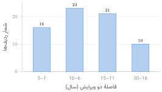
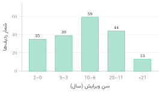
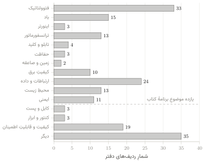
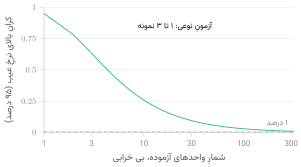
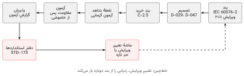
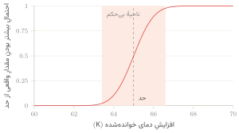

58 استانداردهای بینالمللی: یافتن، تفسیر و بهکاربستن
58.1 نقشهٔ فصل
دفترِ استانداردهای این کتاب فهرستی آموزشی است: عنوان، ویرایش و وضعیتِ هر سند را در تاریخِ ثبتش از کاتالوگِ رسمی یا منبعِ نامبرده آورده است، نه متنِ خودِ استانداردها را. این فهرست مرجعِ معتبرِ هیچ پروژهای نیست. هیچ استانداردِ بینالمللی به خودیِ خود در ایران، افغانستان یا تاجیکستان نیروی قانونی ندارد. ویرایشِ دقیق، وضعیتِ پذیرش، الزامیبودن و الزامهای محلی برای هر انتشار و دوباره برای هر پروژه از منبعِ رسمی وارسی میشوند.
پس از این فصل، خواننده میتواند:
- ساختارِ یک استاندارد را بخواند: دامنه، اصطلاحات، مرجعهای الزامی، بندها، پیوستهای الزامی و آگاهیبخش، ویرایش، اصلاحیه، پذیرشِ ملی و ترجمه.
- صورتهای بیانیِ «باید»، «بهتر است»، «مجاز است» و «میتواند» را جدا کند و الزامی را که وارسیپذیر نیست بازنویسی کند.
- ارجاعِ تاریخدار و بیتاریخ را به ویرایشهای درست برگرداند و بداند کِی کدام را به کار ببرد.
- دفترِ استانداردهای پروژه را با فیلدهای لازم بسازد، وارسی کند و بهروز نگه دارد.
- گواهی، گزارشِ آزمونِ نوعی و جاری، اعتباردهی و اظهارنامهٔ انطباق را با حدِ ادعای هر کدام بسنجد.
- یک بندِ تأییدشده را تا تصمیمِ طراحی، بندِ خرید، بازرسی، آزمون، پذیرش، دفترِ ویرایشها و ماشهٔ تغییر ردیابی کند.
پیشنیاز: روشِ شناساییِ الزامها و دفترِ انطباق (فصل 54)، و سه پروندهٔ کشوری (فصل 55، فصل 56، فصل 57) که نشان دادند نیروی قانونیِ یک استاندارد از کجا میآید.
- اگر مشخصاتِ خرید بنویسد «طبقِ IEC 60529» بی سال، کدام ویرایش و کدام اصلاحیهها به کار میروند؟
- آیا گواهیِ آزمونِ نوعیِ یک مدل نشان میدهد که واحدِ تحویلشده سالم است؟
- چرا جملهٔ «اتصال به زمین باید کافی باشد» الزامِ خوبی نیست؟
پاسخها: (۱) آخرین ویرایش با همهٔ اصلاحیههایش؛ (۲) نه، نشان میدهد طرح میتواند آزمون را بگذراند، و واحد را آزمونِ جاری و آزمونِ ساختگاه نشان میدهند؛ (۳) چون «کافی» را نمیتوان سنجید، و الزام باید عدد و آزمون داشته باشد. اگر دو پرسش یا بیشتر را نتوانستید، بخش 54.2 و فصل 40 را مرور کنید.
جایگاهِ این فصل در نیروگاهِ P. از فصلِ ۲ به بعد، هر استانداردی که کتاب نام برده در دفترِ استانداردهای کتاب ثبت شده است (STD-001 به بعد): عنوان، نهادِ صادرکننده، ویرایش، وضعیتِ پذیرش، منبعِ رسمی، رشته، کاربرد در کتاب و تاریخِ وارسی. این فصل همان دفتر را داده میگیرد و روشِ کار با استانداردها را روی آن میآموزد. پنج سند در همین فصل ثبت شدهاند (STD-187 تا STD-191). مشخصات، گواهیها و دامنههای اعتباردهیِ نمونه آموزشیاند (A-567 تا A-570). نتیجه مبنای D-062 است.
برنامه:
companion/plantp/stdreg.py و companion/ch58/run.py
REQUIRED = ("designation", "title", "issuing_body", "edition",
"adoption_or_legal_status", "official_source", "discipline",
"applicability_in_book", "date_verified")
def load(path) -> list[dict]:
with open(path, encoding="utf-8", newline="") as fh:
return list(csv.DictReader(fh))
def completeness(rows: list[dict], fields=REQUIRED) -> dict:
"""Missing (empty) values per field, and the ids of incomplete rows."""
missing = {f: 0 for f in fields}
bad = []
for r in rows:
gaps = [f for f in fields if not (r.get(f) or "").strip()]
for f in gaps:
missing[f] += 1
if gaps:
bad.append(r.get("id", "?"))
return dict(missing=missing, incomplete=bad)the book's standards register: 191 rows, 9 required fields each
fields: designation, title, issuing_body, edition, adoption_or_legal_status,
official_source, discipline, applicability_in_book, date_verified
empty required fields: 0; incomplete rows: 0
complete is not the same as current: a filled 'edition' field
records what was verified on 'date_verified', nothing more58.2 الف. سواد استاندارد
استاندارد سندی است که نهادی شناختهشده با اجماع تهیه کرده و قاعده، رهنمود یا مشخصهای را برای کاربردِ مکرر میدهد. خواندنش مهارتی جدا از دانستنِ موضوعش است. باید دانست کدام بخش الزام میسازد، کدام ویرایش به کار میرود، و چه چیزی آن را برای یک پروژه الزامی میکند.
58.2.1 کالبدِ یک استاندارد
قاعدههای نگارشِ ISO و IEC (STD-191) ساختاری یکسان به سندهایشان میدهند. بخشها را باید با نقششان شناخت:
| بخش | چه میگوید | چه چیزی را نمیگوید |
|---|---|---|
| پیشگفتار | نهادِ تهیهکننده، ویرایش، آنچه نسبت به ویرایشِ پیشین تغییر کرده | الزام |
| دامنه | چه چیزی و چه کاربردی را پوشش میدهد | اینکه برای پروژهٔ شما الزامی است |
| مرجعهای الزامی | سندهایی که بخشی از متنشان جزءِ الزامهای این سند میشود | فهرستِ مطالعهٔ بیشتر (آن کتابنامه است) |
| اصطلاحات و تعریفها | معنای دقیقِ واژهها در همین سند | معنای همان واژه در سندِ دیگر |
| بندهای فنی | الزام، روشِ آزمون، معیارِ پذیرش | ارزشِ پروژه، مگر سند آن را بدهد |
| پیوستِ الزامی | بخشی از الزامها، به اندازهٔ متنِ اصلی | — |
| پیوستِ آگاهیبخش | توضیح، نمونه، راهنما | الزام |
| کتابنامه | منبعهای پیشزمینه | الزام |
مثال 58.1 (الزام در پیوست، راهنما در متن) پرسش. در بازبینیِ یک گزارشِ آزمون، کارشناس میگوید روشی که آزمایشگاه به کار برده «فقط در پیوست آمده و الزامی نیست». چه چیزی را باید وارسی کرد؟
پاسخ. عنوانِ همان پیوست را. پیوستِ «الزامی» به اندازهٔ متنِ اصلی الزام میسازد و پیوستِ «آگاهیبخش» نه. اگر پیوست الزامی باشد، روشِ آن جزءِ آزمون است.
تفسیر. این وارسی متنِ خودِ استاندارد را میخواهد. دفترِ کتاب فقط عنوان و ویرایش را دارد (بخش 58.3.2). برای پروژه، متنِ بندهایی که به کار میروند خریده و خوانده میشود. پیشگفتار هم میگوید چه چیزی از ویرایشِ پیشین تغییر کرده، و این همان چیزی است که تحلیلِ شکافِ ویرایشها میخواهد (بخش 58.4.3).
58.2.2 صورتهای بیانی
قاعدههای نگارشِ ISO و IEC نوعِ هر جمله را با فعلش معین میکنند. این کتاب در مشخصاتِ فارسی همین چهار صورت را به کار میبرد:
| انگلیسی | فارسیِ این کتاب | نوع |
|---|---|---|
| shall / shall not | باید / نباید | الزام / منع |
| should | بهتر است | توصیه |
| may | مجاز است | اجازه |
| can | میتواند | امکان یا توانایی |
همان قاعدهها میگویند الزام باید عینی و وارسیپذیر باشد، و واژههایی مانندِ «کافی» یا «مناسب» آن را وارسیناپذیر میکنند. «مجاز نیست» هم جای «نباید» نمینشیند.
FORMS = [("shall not", "prohibition"), ("shall", "requirement"),
("should", "recommendation"), ("may", "permission"),
("can", "possibility")]
VAGUE = ("adequate", "suitable", "sufficient", "appropriate", "as required",
"where necessary", "good practice")
def verbal_form(sentence: str) -> tuple[str, list[str]]:
"""The provision type of a sentence by its verbal form, and any vague
words that make a requirement impossible to verify."""
s = " " + sentence.lower() + " "
kind = "statement"
for word, name in FORMS:
if f" {word} " in s:
kind = name
break
vague = [w for w in VAGUE if w in s]
return kind, vagueverbal forms in a teaching Plant P specification
S01 requirement vague: -
The revenue meter shall be class 0.5S at the ownership boundary.
S02 prohibition vague: -
Cable joints shall not be placed inside road crossings.
S03 recommendation vague: -
The inverter should be rated for the site's maximum ambient temperature.
S04 permission vague: -
The supplier may offer an alternative earthing material with evidence.
S05 possibility vague: -
Site tests can be witnessed by the network company.
S06 requirement vague: adequate
Earthing shall be adequate for the fault level.
S07 requirement vague: suitable
Transformer bushings shall be suitable for the site.
S08 prohibition vague: -
The average winding temperature rise shall not exceed 65 K.
S09 requirement vague: good practice
Corrosion protection shall follow good practice.
S10 statement vague: -
The plant exports at the point of connection.
S11 recommendation vague: where necessary
Spare parts should be held where necessary.
S12 requirement vague: -
The contractor shall submit type-test reports with the bid.
permission 1, possibility 1, prohibition 2, recommendation 2, requirement 5,
statement 1
3 of 7 requirements cannot be verified as written (a
vague word); they are rewritten with a value and a test
before the specification is issuedمثال 58.2 (سه الزامِ وارسیناپذیر) پرسش. در دوازده جملهٔ یک مشخصاتِ آموزشیِ نیروگاهِ P، چند الزام وارسیناپذیرند و چگونه بازنویسی میشوند؟
پاسخ. از هفت الزام و منع، سه تا واژهٔ مبهم دارند: «کافی» برای زمین، «مناسب» برای بوشینگ، و «رویهٔ خوب» برای حفاظت در برابرِ خوردگی. یک توصیه هم «هر جا لازم باشد» دارد. بازنویسی با عدد و آزمون است. نمونه: «مقاومتِ شبکهٔ زمین و ولتاژهای تماس و گام باید از حدهای گزارشِ طراحیِ زمین (PLP-ELE-CAL-0011) کمتر باشند و با آزمونِ افتِ پتانسیل وارسی شوند.»
تفسیر. الزامی که وارسیپذیر نیست در پذیرش دعوا میسازد، چون هر طرف «کافی» را به سودِ خود میخواند. جملهٔ «نیروگاه در نقطهٔ اتصال صادر میکند» الزام نیست، بیانِ واقعیت است، و جایش در توضیح است نه در فهرستِ الزامها (بخش 38.3.5).
58.2.3 ترجمه و نوعِ جمله
ترجمهٔ یک مشخصات یا یک استاندارد باید نوعِ هر جمله را نگه دارد. «بهتر است» اگر «باید» ترجمه شود، توصیه را الزام میکند. «باید» اگر «مجاز است» ترجمه شود، الزام را اجازه میکند. برنامه نوعِ هر جملهٔ انگلیسی و ترجمهاش را جدا میخواند و مقایسه میکند.
does the Persian translation keep each provision type?
S01 English requirement Persian requirement
S02 English prohibition Persian prohibition
S03 English recommendation Persian requirement MISMATCH
S04 English permission Persian permission
S05 English possibility Persian possibility
S06 English requirement Persian requirement
S07 English requirement Persian requirement
S08 English prohibition Persian prohibition
S09 English requirement Persian requirement
S10 English statement Persian statement
S11 English recommendation Persian recommendation
S12 English requirement Persian permission MISMATCH
mismatches: S03, S12
a recommendation translated as 'baayad' becomes a requirement,
and a requirement as 'mojaaz ast' a permission: the type is
checked sentence by sentence before a translation is issued| شماره | انگلیسی | ترجمهٔ نادرست | ترجمهٔ درست |
|---|---|---|---|
| S03 | The inverter should be rated for the site’s maximum ambient temperature. | اینورتر باید … ردهبندی شود. | اینورتر بهتر است … ردهبندی شود. |
| S12 | The contractor shall submit type-test reports with the bid. | پیمانکار مجاز است … بدهد. | پیمانکار باید … بدهد. |
مثال 58.3 (یک واژه، تعهدی دیگر) پرسش. در ترجمهٔ دوازده جملهٔ مشخصاتِ نمونه، کدام جملهها نوعشان عوض شده است و پیامدش چیست؟
پاسخ. دو جمله. S03 توصیه بود و در ترجمه الزام شد: اگر نسخهٔ فارسی معتبر باشد، اینورتری که برای دمای بیشینه ردهبندی نشده رد میشود. S12 الزام بود و در ترجمه اجازه شد: پیمانکار میتواند گزارشهای آزمونِ نوعی را ندهد.
تفسیر. قرارداد میگوید در اختلاف کدام نسخه معتبر است (بخش 54.3.5). وارسیِ نوعِ جمله پیش از صدورِ هر ترجمه کمهزینه است. همین وارسی برای استانداردِ ملیای که ترجمهٔ استانداردِ بینالمللی است هم معنا دارد. اگر ترجمه نوعِ جملهای را عوض کرده باشد، پذیرش دیگر «یکسان» نیست (بخش 58.2.8).
58.2.4 ارجاعِ تاریخدار و بیتاریخ
قاعدهٔ همهٔ استانداردهای ISO و IEC این است: در ارجاعِ تاریخدار فقط همان ویرایشِ نامبرده به کار میرود. در ارجاعِ بیتاریخ، آخرین ویرایشِ سند با همهٔ اصلاحیههایش به کار میرود. همین قاعده برای مشخصاتِ پروژه هم انتخابی آگاهانه است.
def resolve(ref: str, catalogue: dict) -> list[str]:
"""Which parts apply for a reference. catalogue: designation -> list of
(year, part) in order, e.g. [(2023, 'IEC 62548-1:2023'),
(2025, 'Amd 1:2025')], with editions marked 'edition'. A dated reference
('X:2023') takes that edition alone; an undated one ('X') the latest
edition with every amendment issued since."""
base, _, year = ref.partition(":")
parts = catalogue[base]
if year:
return [p for y, p, kind in parts
if kind == "edition" and y == int(year)]
last = max(i for i, (_, _, kind) in enumerate(parts)
if kind == "edition")
return [p for _, p, _ in parts[last:]]dated and undated references resolved against the register
IEC 62548-1 -> IEC 62548-1:2023 + AMD1:2025
IEC 62548-1:2023 -> IEC 62548-1:2023
IEC 60529 -> IEC 60529:1989 + AMD1:1999 + AMD2:2013
IEC 60529:1989 -> IEC 60529:1989
IEC 61400-24 -> IEC 61400-24:2019 + AMD1:2024
IEC 60076-2 -> IEC 60076-2:2011
IEC 60076-2:2011 -> IEC 60076-2:2011
if edition 4 of IEC 60076-2 is published (teaching placeholder):
IEC 60076-2 -> IEC 60076-2 Ed. 4 (teaching placeholder: in
development)
IEC 60076-2:2011 -> IEC 60076-2:2011
an undated reference moves with the standard; a dated one
stays - a specification chooses which, on purposeمثال 58.4 (ارجاعی که با استاندارد جابهجا میشود) پرسش. مشخصاتِ خرید یک بار «IEC 60529» مینویسد و یک بار «IEC 60529:1989». تفاوت چیست؟
پاسخ. ارجاعِ بیتاریخ ویرایشِ ۱۹۸۹ را با اصلاحیههای ۱۹۹۹ و ۲۰۱۳ میگیرد (STD-119). ارجاعِ تاریخدار فقط متنِ ۱۹۸۹ را میگیرد، بی اصلاحیهها. اگر ویرایشِ تازهای منتشر شود، ارجاعِ بیتاریخ خودبهخود به آن میرود و ارجاعِ تاریخدار نه.
تفسیر. قرارداد با ارجاعِ تاریخدار پایدار است: همان چیزی که قیمتگذاری شد آزمون میشود. ارجاعِ بیتاریخ وقتی به کار میرود که آخرین ویرایش را عمداً میخواهیم، مثلاً در روشِ اندازهگیریای که در طولِ عمرِ نیروگاه تکرار میشود. در هر دو حالت، دفترِ استانداردها ویرایشِ دقیق را نگه میدارد (بخش 58.5.6).
58.2.5 ویرایش، اصلاحیه و متنِ تلفیقی
ویرایشِ تازه جای ویرایشِ پیشین را میگیرد. اصلاحیه بخشی از متن را تغییر میدهد و ویرایش را عوض نمیکند. متنِ تلفیقی ویرایشِ پایه و اصلاحیههایش را در یک سند میآورد، ولی سندِ تازهای نیست (بخش 54.2.6). اصلاحیهٔ ویرایشی خطای چاپی یا نگارشی را درست میکند.
edition age of 190 dated rows on 2026-11-18 (years since the edition)
0-2: 35 3-5: 39 6-10: 59 11-20: 44 21-60: 13
median age 7 years; rows with an amendment: 45
oldest editions:
38 years STD-116 IEC 60949:1988+AMD1:2008
37 years STD-119 IEC 60529:1989+AMD1:1999+AMD2:2013
27 years STD-047 IEC 61683:1999
24 years STD-035 IEC 61000-4-7:2002+AMD1:2008 CSV
23 years STD-169 IEC 61014:2003
an old edition may still be current - a standard is not
replaced on a schedule; each row's currency is checked, not
assumed from its ageyears between an edition and the one before it (70 rows that
name the edition they replace)
quartiles 7 / 10 / 13 years; shortest 1, longest 28
1-5: 16 6-10: 23 11-15: 21 16-30: 10
shortest:
1 UL 9540A (from 2025)
3 ISO 6892-1:2019 (from 2016)
3 IEC 60904-3:2019 (from 2016)
longest:
23 ISO 10012:2026 (from 2003)
27 ISO 2859-1:2026 (from 1999)
28 ISO 9060:2018 (from 1990)
23% lasted five years or less; 69% twelve or less, i.e. at
that pace two new editions within a 25-year plant life - the
register is kept, not written once
مثال 58.5 (ده سال در میانه) پرسش. از ردیفهایی که ویرایشِ پیشین را نام میبرند، فاصلهٔ دو ویرایش چقدر است؟
پاسخ. از ۷۰ ردیف، چارکها ۷، ۱۰ و ۱۳ سالاند، کوتاهترین ۱ سال (UL 9540A) و بلندترین ۲۸ سال. ۲۳ درصد پنج سال یا کمتر دوام آوردند و ۶۹ درصد دوازده سال یا کمتر (شکل 58.1).
تفسیر. با این آهنگ، بیشترِ استانداردهای نیروگاه در عمرِ ۲۵سالهاش دو ویرایشِ تازه میبینند. پس دفترِ استانداردها سندی است که نگه داشته میشود، نه سندی که یک بار نوشته شود. ارجاعِ تاریخدار قرارداد را پایدار میکند، ولی آزمونهای دورهایِ بهرهبرداری و قطعههای جایگزین با ویرایشهای تازه روبهرو میشوند (فصل 53). این آمار فقط از ردیفهایی است که ویرایشِ پیشین را نوشتهاند و نمونهای تصادفی نیست.

مثال 58.6 (سیوهشت سال و هنوز جاری) پرسش. کهنهترین ویرایشِ دفتر چند سال دارد و آیا کهنه بودن یعنی جایگزین شدن؟
پاسخ. ۳۸ سال: IEC 60949:1988 با اصلاحیهٔ ۲۰۰۸ (STD-116). میانهٔ سنِ ۱۹۰ ردیفِ تاریخدار ۷ سال است و ۴۵ ردیف اصلاحیه دارند. کهنه بودن به معنای جایگزین شدن نیست. هر دو سندِ کهنهترین هنوز اصلاحیههای تازهتر دارند (شکل 58.2).
تفسیر. استانداردها بر پایهٔ برنامهٔ زمانی جایگزین نمیشوند. هر سند در دورههایی بازنگری میشود و نتیجه ممکن است تأییدِ همان متن باشد. پس جاریبودنِ هر ردیف با کاتالوگ وارسی میشود، نه با سنش. ۶۴ ردیف ۶ تا ۱۰ سال دارند. آنها بیشترین احتمالِ بازنگریِ نزدیک را دارند و پایش رویشان است (بخش 58.5.7).
58.2.6 سریها و بخشها
بسیاری از استانداردها سریاند: یک شماره با بخشهای جدا. بخشِ ۱ معمولاً عمومی است و بخشهای دیگر ویژه. بخشِ ویژه با بخشِ عمومیاش خوانده میشود، در ویرایشی که خودش نام میبرد.
standards that come in series (parts of one number in the register)
IEC 61400 (13 rows):
61400-1, 61400-11, 61400-12-1, 61400-13, 61400-21-1, 61400-24
61400-26-1, 61400-27-1, 61400-27-2, 61400-4, 61400-5, 61400-6
IEC 60076 (8 rows):
60076-1, 60076-10, 60076-11, 60076-18, 60076-2, 60076-3, 60076-5
60076-7
IEC 61000 (6 rows):
61000-3-6, 61000-4-15, 61000-4-30, 61000-4-7, 61000-6-2, 61000-6-4
IEC 62443 (6 rows):
62443-2-1, 62443-2-4, 62443-3-2, 62443-3-3, 62443-4-1, 62443-4-2
IEC 60904 (5 rows):
60904-1, 60904-1-2, 60904-13, 60904-3, 60904-9
part 1 is usually general and the others particular: a
particular part is read with its general part, in the
editions it namesمثال 58.7 (سیزده بخش از یک شماره) پرسش. کدام سریها در دفترِ کتاب بیشترین بخش را دارند؟
پاسخ. سریِ IEC 61400 (سامانههای تولیدِ بادی) با ۱۳ ردیف، IEC 60076 (ترانسفورماتورهای قدرت) با ۸، و IEC 61000 (سازگاریِ الکترومغناطیسی) و IEC 62443 (امنیتِ سامانههای صنعتی) هر کدام با ۶.
تفسیر. وقتی مشخصات به یک بخشِ ویژه ارجاع میدهد، بخشِ عمومی هم عملاً در کار است. پس هر دو در دفترِ پروژه میآیند و ویرایشهایشان با هم پایش میشوند. ویرایشِ تازهٔ بخشِ عمومی ممکن است بخشهای ویژه را هم جابهجا کند. در سریِ IEC 60076، دفتر برای بخشهای ۱ و ۲ هر دو یادداشتِ «ویرایشِ ۴ در دستِ تهیه» دارد (STD-120، STD-173).
58.2.7 گونههای سند
همهٔ سندهای یک نهادِ استاندارد «استاندارد» نیستند. مشخصاتِ فنی (TS) سندی است که هنوز به اجماعِ استاندارد نرسیده یا موضوعش در حالِ تغییر است. گزارشِ فنی (TR) داده و دانش میدهد، نه الزام. راهنما (Guide) روش را توضیح میدهد.
document types in the register
international or European standard 149
industry, national or other 24
guide 10
technical specification (TS) 7
technical report (TR) 1
a technical specification or report is not an International
Standard: it can be cited, but its status (and its likely
revision into a standard) is recorded with itمثال 58.8 (مشخصاتِ فنی در قرارداد) پرسش. دفترِ کتاب چند مشخصاتِ فنی و گزارشِ فنی دارد، و اگر مشخصاتِ خرید یکی از آنها را نام ببرد چه باید ثبت شود؟
پاسخ. هفت مشخصاتِ فنی و یک گزارشِ فنی، در برابرِ ۱۴۹ استانداردِ بینالمللی یا اروپایی. مثلاً روشِ اندازهگیریِ دوسوییِ ماژولها مشخصاتِ فنی است (STD-077) و برآوردِ حدهای انتشارِ هارمونیک گزارشِ فنی (STD-130).
تفسیر. مشخصاتِ فنی را میتوان در قرارداد آورد، ولی با تاریخ، و با این یادداشت که ممکن است به استاندارد تبدیل و تغییر داده شود. گزارشِ فنی الزام نمیسازد. اگر پروژه عددی از آن برمیدارد، آن عدد الزامِ خودِ پروژه است و باید در مشخصات صریح نوشته شود (فصل 27).
58.2.8 پذیرشِ ملی، ترجمه و نیروی قانونی
نهادهای ملی و منطقهای استانداردهای بینالمللی را با سه درجهٔ همخوانی میپذیرند (STD-190): یکسان (IDT) با همان متن، شاید با شمارهٔ ملی؛ اصلاحشده (MOD) با انحرافهای فنیِ مشخص؛ و ناهمارز (NEQ). سندِ ملی ممکن است ترجمه باشد. اینکه در اختلاف کدام نسخهٔ زبانی معتبر است، در خودِ سندِ ملی آمده و وارسی میشود.
adoption and legal status as the register records it
adoption not verified 97
international standard (status only) 81
guide or rules 7
industry standard 4
TS or TR 2
no row records a verified national adoption in Iran,
Afghanistan or Tajikistan: legal force comes from a law, a
grid code or a contract that names the standard (ch 54-57)مثال 58.9 (سه راهِ نیروی قانونی) پرسش. یک استانداردِ IEC از چه راههایی برای P الزامی میشود؟ نمونههای سه پروندهٔ کشوری کداماند؟
پاسخ. سه راه: (۱) قانون یا مقرراتی که آن را، یا پذیرشِ ملیاش را، اجباری کند. در ایران، ترانسفورماتورِ قدرت و کابلِ فشارِ متوسط استانداردِ ملیِ اجباری دارند (IR-30). (۲) کدِ شبکه یا قاعدهٔ شرکتِ برق که آن را نام ببرد. در تاجیکستان، قاعدههای ۲۰۲۶ به GOST 32144-2013 ارجاع میدهند (TJ-40). (۳) قرارداد یا مشخصاتِ خرید.
تفسیر. در دفترِ کتاب هیچ ردیفی پذیرشِ ملیِ تأییدشده در سه کشور ندارد. ۹۷ ردیف صریح میگویند «وارسی نشده». در افغانستان پذیرشِ حدودِ ۲۰۰ استاندارد در ۲۰۱۷ گزارش شده است، فقط از منبعِ ثانوی (AF-21). در تاجیکستان پذیرشِ GOST IEC برای فتوولتائیک و باد پیدا نشد (TJ-44). پس برای P، بیشترِ استانداردها از راهِ سوم الزامی میشوند: مشخصاتی که خودمان مینویسیم. این مسئولیتِ نگارشِ درستِ آن را بالا میبرد (بخش 58.2.2).
- پیوستِ آگاهیبخش چه چیزی را نمیسازد؟
- چهار صورتِ بیانی و نوعِ جملهٔ هر کدام را بنویسید.
- ارجاعِ بیتاریخ کدام ویرایش و کدام اصلاحیهها را میگیرد؟
- فرقِ اصلاحیه و ویرایشِ تازه چیست؟
- سه درجهٔ همخوانیِ پذیرشِ ملی کداماند؟
- سه راهی که یک استاندارد برای پروژه الزامی میشود کداماند؟
58.3 ب. روندِ پژوهشِ موضوعی
پژوهشِ استاندارد از پرسش آغاز میشود، نه از فهرست: این تجهیز یا این کار کدام سند را لازم دارد؟ سپس سند در کاتالوگِ نهادِ صادرکننده پیدا میشود، ویرایش و وضعیتش ثبت میشود، و متن برای بندهایی که پروژه به کار میبرد خریده و خوانده میشود. هیچ متنِ محدودی در دفتر یا در این کتاب بازتولید نمیشود.
58.3.1 دفتر بر پایهٔ موضوع
برنامهٔ کتاب پژوهش را در یازده موضوع میخواهد: فتوولتائیک، باد، اینورتر، ترانسفورماتور، تابلو و کلید، حفاظت، زمین، کیفیتِ برق، ارتباطات، محیطِ زیست و ایمنی. تابعِ زیر هر ردیفِ دفتر را با رشته و نامش در یک موضوع میگذارد. سه موضوعِ دیگر را دفترِ کتاب لازم داشت.
TOPICS = [ # (topic, keywords); first match wins
("PV", ("pv", "photovoltaic", "solar")),
("wind", ("wind", "61400", "iecre")),
("inverters", ("inverter", "power conversion",
"power electronics", "62109", "converter")),
("transformers", ("transformer", "60076")),
("switchgear", ("switchgear", "lv assemblies", "enclosure",
"62271", "61439", "installations (substations)")),
("protection", ("overcurrent", "short circuit", "60255",
"dc power systems")),
("grounding", ("earthing", "grounding", "lightning")),
("power quality", ("power quality", "harmonic", "flicker", "61000",
"voltages", "grid connection", "grid studies")),
("communications", ("communication", "telecontrol", "61850",
"60870", "cyber", "data", "modbus", "dnp",
"time", "network", "62443")),
("environment", ("environment", "life cycle", "lca", "14040",
"14044", "14001", "water", "safeguards",
"social", "carbon", "14067")),
("safety", ("safety", "fire", "battery", "energy storage", "(ess)",
"emergency", "45001", "transport testing")),
# beyond the handoff's eleven: topics the register also needs
("cables and substations", ("cable", "installations (substations)")),
("metering and instruments", ("metering", "instrument", "measuring")),
("quality and reliability", ("quality", "reliability", "sampling",
"statistics", "non-destructive",
"material testing", "laboratories",
"manufacturing")),
]
HANDOFF_TOPICS = 11 # the first eleven entries are the handoff's list
def topic(row: dict) -> str:
"""Topic by the register's discipline and designation first, by the
title only when those say nothing."""
for fields in (("discipline", "designation"), ("title",)):
text = " ".join((row.get(k) or "") for k in fields).lower()
for name, keys in TOPICS:
if any(k in text for k in keys):
return name
return "other"register rows by topic (the handoff's 11 first, then three more)
PV 33
wind 15
inverters 3
transformers 13
switchgear 4
protection 3
grounding 2
power quality 10
communications 24
environment 13
safety 11
cables and substations 3 (added)
metering and instruments 3 (added)
quality and reliability 19 (added)
other 35
thin topics (3 rows or fewer): inverters, protection, grounding
a thin topic is a research gap only if the plant needs more
there: grounding and protection rest on few documents but
on many project calculations (ch 26)
مثال 58.10 (موضوعِ کمسند، محاسبهٔ پرکار) پرسش. کدام موضوعهای برنامهٔ کتاب در دفتر کمسندند و آیا این شکافِ پژوهش است؟
پاسخ. اینورتر و حفاظت هر کدام ۳ ردیف دارند و زمین ۲. فتوولتائیک با ۳۴ و ارتباطات و داده با ۲۴ بیشتریناند (شکل 58.3).
تفسیر. کمسند بودن شکاف نیست، اگر پروژه در آن موضوع سندِ بیشتری لازم نداشته باشد. حفاظت و زمین بر چند سندِ پایه تکیه دارند، ولی بر محاسبههای فراوانِ پروژه (فصل 26). اینورتر کمسند به نظر میرسد، چون استانداردهای ایمنی و ضدجزیرهاش زیرِ «فتوولتائیک» گروهبندی شدهاند. پس گروهبندی هم یک انتخاب است و باید با جستوجوی دوم بر پایهٔ تجهیز وارسی شود (بخش 58.4.2).
58.3.2 کاتالوگها و آنچه دفتر ثبت میکند
where the register's sources are (official catalogues first)
webstore.iec.ch 114
iso.org 40
standards.ieee.org 7
bipm.org 5
rfc-editor.org 3
ieeexplore.ieee.org 2
standards.iteh.ai 2
electronics.org 2
other sources: 16
rows that state no clause was read or quoted: 89 of 191
the register records that a document exists, its title and
edition - the text itself is bought and read for the projectمثال 58.11 (وجود و ویرایش، نه متن) پرسش. منبعِ رسمیِ ردیفهای دفتر کجاست و دفتر دربارهٔ متنِ سندها چه میگوید؟
پاسخ. ۱۱۴ ردیف از فروشگاهِ IEC و ۴۰ ردیف از ISO وارسی شدهاند. ۸۹ ردیف از ۱۹۱ صریح میگویند که هیچ بندی خوانده یا نقل نشده است.
تفسیر. دفترِ کتاب ثابت میکند که سند هست و ویرایشش چیست. محتوای الزامها را ثابت نمیکند. در پروژه، هر بندی که به مشخصات، آزمون یا پذیرش راه مییابد از متنِ خریدهشده خوانده و در سابقهٔ پژوهش با شمارهٔ بند ثبت میشود (بخش 54.3.6). کاتالوگهای نهادهای ملی (سازمانِ ملیِ استانداردِ ایران، مرجعِ استانداردِ افغانستان، تاجیکاستاندارد) برای پذیرشِ ملی جداگانه جستوجو میشوند (فصل 55، فصل 56، فصل 57).
58.3.3 سابقهٔ پژوهشِ همین فصل
research log of this chapter's own verification (2026-11-18)
ISO/IEC 17025 as expected
looked for 2017, edition 3; found 2017, edition 3, confirmed
ISO/IEC 17065 note added
looked for 2012; found 2012; draft amendment listed 2025
ISO/IEC 17020 CORRECTED
looked for 2012; found 2012 withdrawn; 2026 edition 3
ISO/IEC 17050-1 CORRECTED
looked for 2010; found 2004 (no 2010 edition found)
ISO/IEC Guide 21-1 confirm
looked for 2005; found 2005; newer edition not seen
ISO/IEC Directives Part 2 confirm
looked for 2021; found 2021, 9th edition; 2026 amendment
drafting page (iso.org) other source used
looked for rule text; found HTTP 403: not readable
2 of 6 editions were wrong as first written: the edition
in memory or in a secondary source is a lead, the catalogue
entry is the recordمثال 58.12 (دو ویرایش از شش، نادرست در نخستین نوشتن) پرسش. وقتی پنج سندِ ارزیابیِ انطباق و نگارش برای این فصل ثبت شدند، وارسی چه چیزی را درست کرد؟
پاسخ. دو ویرایش از شش نادرست بودند: ISO/IEC 17020:2012 لغو شده و ویرایشِ ۳ در مارسِ ۲۰۲۶ جای آن را گرفته است (STD-188). برای ISO/IEC 17050-1 هم ویرایشِ «۲۰۱۰» پیدا نشد و ویرایشِ جاری ۲۰۰۴ است (STD-189). صفحهٔ قاعدههای نگارش در وبگاهِ ISO خوانده نشد و صفحههای IEC و راهنمای نگارشِ ISO به کار رفتند.
تفسیر. ویرایشی که در ذهن یا در منبعِ ثانوی است، سرنخ است. سابقه همان مدخلِ کاتالوگ است. سابقهٔ جستوجو آنچه دنبالش بودیم، آنچه یافتیم و آنچه نتوانستیم بخوانیم را با هم نگه میدارد (بخش 54.3.6). صفحهای که باز نشد هم جزءِ سابقه است، چون میگوید ادعا بر کدام منبعِ جایگزین تکیه دارد.
register rows by lifecycle stage (keywords in the applicability field;
a row may serve several stages)
design 21
manufacture and factory test 19
site test and commissioning 10
operation and maintenance 11
rows with no stage word: 137 of 191
the book's applicability field names chapters and purposes,
seldom the stage; a project register gives each row a stage
column, because one standard is read at several stagesمثال 58.13 (ستونی که دفترِ کتاب ندارد) پرسش. دفترِ کتاب چند ردیف را به مرحلهای از عمرِ پروژه پیوند میدهد؟
پاسخ. از ۱۹۱ ردیف، ۱۳۷ ردیف هیچ واژهٔ مرحلهای در ستونِ کاربرد ندارند. ۲۱ ردیف به طراحی، ۱۹ به ساخت و آزمونِ کارخانه، ۱۰ به آزمونِ ساختگاه و راهاندازی و ۱۱ به بهرهبرداری و نگهداری اشاره میکنند.
تفسیر. ستونِ کاربردِ دفترِ کتاب فصل و هدف را میگوید، نه مرحله را. این برای کتاب بس است. برای پروژه نه، چون یک استاندارد در چند مرحله خوانده میشود: حدِ طراحی، آزمونِ کارخانه و وارسیِ ساختگاه. دفترِ پروژه ستونِ مرحله را جدا دارد تا هر مرحله فهرستِ سندهای خود را بگیرد (بخش 58.9).
58.3.4 استانداردها و فصلها
standards against chapters (applicability field)
most-cited standards:
STD-011 ISO/IEC 17025:2017 4 chapters
STD-023 ISO 9712:2021 4 chapters
STD-034 IEC 61000-4-30:2025 4 chapters
STD-041 IEC 60085:2007 4 chapters
STD-053 IEC 61400-21-1:2019 4 chapters
STD-080 IEC 61400-1:2019 4 chapters
chapters with most standards:
ch 10: 26
ch 34: 15
ch 24: 14
ch 11: 13
ch 41: 12
ch 2: 11
rows tied to one chapter only: 90
a hub standard changes many records when its edition changesمثال 58.14 (سندِ کانونی، تغییرِ پرهزینه) پرسش. کدام سندها در بیشترین فصلها به کار رفتهاند و چرا این مهم است؟
پاسخ. شش سند هر کدام در ۴ فصل به کار رفتهاند، از جمله ISO/IEC 17025 (آزمایشگاهها)، IEC 61000-4-30 (اندازهگیریِ کیفیتِ برق) و IEC 61400-1 (طراحیِ توربین). فصلِ ۱۰ با ۲۶ سند بیشترین است. ۹۰ ردیف فقط به یک فصل وابستهاند.
تفسیر. وقتی ویرایشِ یک سندِ کانونی عوض میشود، سابقههای چند فصل باید وارسی شوند. پس سندهای کانونی در پایش دورهٔ کوتاهتری میگیرند (بخش 58.5.7). در پروژه همین شمارش روی سندهای پروژه انجام میشود، نه روی فصلها: هر سند به کدام مشخصات، روش و گزارشِ آزمون پیوند دارد.
58.3.5 موردهای باز و ردیفهای تکراری
open items in the register: 39 of 191 rows ask to confirm
an edition, a status or a reported revision
other 10
environment 5
safety 5
transformers 4
communications 4
PV 3
duplicates (same document and edition): 3 groups:
STD-032 = STD-094
STD-037 = STD-128
STD-084 = STD-125
duplicates are kept as aliases because chapters cite both ids;
a register meant for a project merges them before issueمثال 58.15 (چهلوشش پرسش، سه تکرار) پرسش. دفترِ کتاب چند موردِ باز دارد و چه خطایی در آن پیدا شد؟
پاسخ. ۳۹ ردیف از ۱۹۱ (۲۰ درصد) هنوز میخواهند ویرایش، وضعیت یا بازنگریِ گزارششدهای تأیید شود. وارسیِ تکرار سه جفت ردیف پیدا کرد که یک سند را دو بار ثبت کردهاند: IEC 81346-1:2022 (STD-032 و STD-094)، IEEE 519-2022 (STD-037 و STD-128) و IEC 61400-24:2019 (STD-084 و STD-125، دومی متنِ تلفیقیِ با اصلاحیه).
تفسیر. هر جفت در فصلهای جدا ثبت شده بود، هر بار با شناسهٔ تازه، چون نویسنده پیش از ثبت دفتر را جستوجو نکرده بود. دو ردیفِ یک سند ممکن است روزی ویرایشهای متفاوت نشان دهند و دفتر با خودش ناسازگار شود. هر شش شناسه در متنِ کتاب به کار رفتهاند. پس ردیفِ دوم به صورتِ «نامِ دیگرِ» ردیفِ نخست نگه داشته شد و در یادداشتش ثبت است. در دفترِ پروژه، تکرار پیش از صدور ادغام میشود و هر ارجاع به شناسهٔ باقیمانده برمیگردد. وارسیِ تکرار بخشی از آزمونهای دفتر میشود.
- پژوهشِ استاندارد از چه آغاز میشود؟
- کدام موضوعها در دفتر کمسندند و آیا این شکافِ پژوهش است؟
- دفترِ کتاب دربارهٔ متنِ استانداردها چه میگوید؟
- چرا سندِ کانونی در پایش دورهٔ کوتاهتری دارد؟
- چرا دو ردیفِ یک سند در دفتر خطرناک است؟
58.4 پ. ارزیابیِ انطباق و بهکاربستن
ارزیابیِ انطباق نشان میدهد که یک فراورده، فرایند یا کار الزامهای معینی را برآورده میکند. هر سندِ شاهد ادعایی دارد و حدی برای ادعایش. خطای رایج این است که از یک سند بیش از ادعایش خوانده شود.
58.4.1 گونههای شاهد
| سند | چه کسی صادر میکند | ادعا | حدِ ادعا |
|---|---|---|---|
| گزارشِ آزمونِ نوعی | آزمایشگاه | نمونهٔ آزمودهشدهٔ یک طرح آزمون را گذراند | واحدِ تحویلی، ویرایشِ دیگر، تغییرِ طرح |
| گواهیِ نوعی | نهادِ گواهیدهی | طرح، بر پایهٔ آزمونها و بازرسیهای برنامه، منطبق است | هر چیزی بیرون از دامنهٔ گواهی |
| گزارشِ آزمونِ جاری | سازنده یا آزمایشگاه | این واحد آزمونهای جاری را گذراند | آزمونهای نوعی، رفتار در ساختگاه |
| گزارشِ بازرسی | نهادِ بازرسی | آنچه بازرس دید منطبق بود | آنچه بازرس ندید |
| اظهارنامهٔ انطباقِ تأمینکننده | خودِ تأمینکننده | تأمینکننده انطباق را اعلام میکند | وارسیِ شخصِ ثالث |
| آزمونِ ساختگاه | پیمانکار، با شاهدِ مالک | نصب و کارکرد در ساختگاه | طرح |
نهادها هم استانداردِ خود را دارند: آزمایشگاهها ISO/IEC 17025 (STD-011)، نهادهای گواهیدهیِ فراورده ISO/IEC 17065 (STD-187)، نهادهای بازرسی ISO/IEC 17020:2026 که جای ویرایشِ ۲۰۱۲ را گرفته است (STD-188)، و اظهارنامهٔ تأمینکننده ISO/IEC 17050-1 (STD-189). «اعتباردهی» یعنی نهادی مستقل صلاحیتِ آن آزمایشگاه یا نهاد را برای دامنهای معین وارسی کرده است. بیرون از آن دامنه، اعتباردهی چیزی نمیگوید. برای توربینِ بادی، طرحِ گواهیدهیِ نوعی و قطعهای خودش سندِ عملیاتی دارد (STD-089، فصل 42).
58.4.2 شاهدی که نیروگاهِ P برای هر تجهیز میخواهد
evidence Plant P asks for, by equipment (chapters 40-50)
equipment T R S F
PV modules (ch 41) x x x x
PV inverters (ch 44) x x . x
wind turbines (ch 42) x . . x
main transformers (ch 43) x x . x
PV unit transformers (ch 39, 43) x x x .
MV switchgear (ch 46) x x . x
MV cables (ch 46) x x x x
battery containers (ch 45) x x x x
protection relays (ch 26, 46) x x . x
revenue meters (ch 48) x x . x
T type test / certificate; R routine test, every unit; S sample test; F site
test
type 10, routine 9, sample 4, site 9 of 10
a type test shows the design; only routine and site tests
speak for the unit deliveredمثال 58.16 (طرح در کارخانه، واحد در ساختگاه) پرسش. از ده دستهٔ تجهیزِ نیروگاهِ P، کدامها آزمونِ جاری روی هر واحد ندارند و چه چیزی جای آن را میگیرد؟
پاسخ. فقط توربینِ بادی. برای آن، پروندهٔ کارخانهٔ قطعهها (پره، گیربکس، ژنراتور؛ فصل 42) و آزمونهای راهاندازی در ساختگاه جای آزمونِ جاریِ کلِ ماشین را میگیرند. همهٔ ده دسته آزمونِ نوعی یا گواهی دارند. نه دسته آزمونِ ساختگاه دارند و چهار دسته آزمونِ نمونهای.
تفسیر. آزمونِ نوعی طرح را نشان میدهد و فقط آزمونهای جاری و ساختگاه برای واحدِ تحویلی سخن میگویند (فصل 40). ترانسفورماتورِ واحدهای فتوولتائیک آزمونِ ساختگاهِ جدا ندارد، چون با بلوکِ اینورتر آزموده میشود (فصل 50). جدول از فصلهای ۴۰ تا ۵۰ آمده و آموزشی است (A-568).
58.4.3 گواهی در برابرِ مشخصات و دامنهٔ آزمایشگاه
certificates against the specification and the lab's scope
equipment edition scope verdict
PV module same yes accept
PV module safety older yes gap analysis (older edition)
PV inverter safety same yes accept
PV inverter anti-islanding same no reject: not in the lab's scope
battery cells and system same yes accept
MV switchgear older yes gap analysis (older edition)
revenue meter same yes accept
accept: 4; gap analysis (older edition): 2; reject: not in the lab's scope:
1
an older edition is not a failure, it is a question: which
clauses changed, and does the change touch this product?مثال 58.17 (ویرایشِ کهنه پرسش است، دامنهٔ نادرست نه) پرسش. از هفت گواهیِ آموزشی کدامها پذیرفته میشوند، کدامها تحلیلِ شکاف میخواهند و کدام رد میشود؟
پاسخ. چهار پذیرفتهاند: ویرایش همان است و آزمون در دامنهٔ آزمایشگاه. دو گواهی به ویرایشِ پیشیناند: ایمنیِ ماژول به IEC 61730-2:2016 در برابرِ 2023 و تابلوی فشارِ متوسط به IEC 62271-200:2011 در برابرِ 2021. این دو تحلیلِ شکاف میخواهند. گواهیِ ضدجزیرهٔ اینورتر رد میشود، چون IEC 62116 در دامنهٔ اعتباردهیِ آن آزمایشگاه نیست.
تفسیر. تحلیلِ شکاف پرسشی مشخص است: کدام بندها میانِ دو ویرایش تغییر کردهاند (پیشگفتارِ ویرایشِ تازه آنها را برمیشمارد)، و آیا آن تغییرها به این فراورده مربوطاند؟ پاسخ ممکن است یک آزمونِ تکمیلی باشد، نه آزمونِ کامل. ولی آزمونی که بیرون از دامنهٔ اعتباردهی انجام شده، با گزارشِ بهتر درست نمیشود. یا آزمایشگاهِ دیگری لازم است، یا آزمونِ شاهددار. همهٔ گواهیها و دامنهها آموزشیاند (A-568).
58.4.4 نوشتنِ بندِ آزمونِ نوعی
def clause(equipment: str, designation: str, lab: str = "ISO/IEC 17025") -> str:
"""A dated, verifiable type-test clause for a purchase specification."""
return (f"The {equipment} shall be type-tested to {designation} by a "
f"laboratory accredited to {lab} with {designation} in its scope; "
f"the report shall name the model, the edition and the date.")type-test clauses written from the register (dated, verifiable)
[requirement; vague: -]
The PV modules shall be type-tested to IEC 61215-2:2021 by a laboratory
accredited to ISO/IEC 17025 with IEC 61215-2:2021 in its scope; the report
shall name the model, the edition and the date.
[requirement; vague: -]
The PV modules shall be type-tested to IEC 61730-2:2023 by a laboratory
accredited to ISO/IEC 17025 with IEC 61730-2:2023 in its scope; the report
shall name the model, the edition and the date.
[requirement; vague: -]
The PV inverters shall be type-tested to IEC 62109-1:2010 by a laboratory
accredited to ISO/IEC 17025 with IEC 62109-1:2010 in its scope; the report
shall name the model, the edition and the date.
[requirement; vague: -]
The PV inverters shall be type-tested to IEC 62116:2014 by a laboratory
accredited to ISO/IEC 17025 with IEC 62116:2014 in its scope; the report
shall name the model, the edition and the date.
[requirement; vague: -]
The battery systems shall be type-tested to IEC 62619:2022 by a laboratory
accredited to ISO/IEC 17025 with IEC 62619:2022 in its scope; the report
shall name the model, the edition and the date.
[requirement; vague: -]
The MV switchgear shall be type-tested to IEC 62271-200:2021 by a laboratory
accredited to ISO/IEC 17025 with IEC 62271-200:2021 in its scope; the
report shall name the model, the edition and the date.
clauses with a vague word or no requirement: 0 of 6
the clause names the edition, the lab's scope and what the
report must show - the three checks of section Cمثال 58.18 (سه وارسی در یک جمله) پرسش. بندِ آزمونِ نوعیِ هر تجهیز را چگونه بنویسیم که سه وارسیِ این بخش در آن باشد؟
پاسخ. بند ویرایش را با سال نام میبرد، آزمایشگاهِ دارای اعتباردهی را با همان ویرایش در دامنهاش میخواهد، و میگوید گزارش چه چیزهایی را نشان دهد: مدل، ویرایش و تاریخ. شش بندِ ساختهشده از دفتر همه الزاماند و هیچ واژهٔ مبهمی ندارند.
تفسیر. بندی که از دفتر ساخته شود، با دفتر بهروز میشود. اگر ویرایش عوض شود، بند دوباره ساخته میشود و تحلیلِ اثر نشان میدهد کدام سفارشها باید تصمیم بگیرند (بخش 58.5.6). متنِ بند انگلیسی است، چون زبانِ قراردادهای خرید بیشتر انگلیسی است. ترجمهٔ فارسی کنارش میآید و قرارداد میگوید در اختلاف کدام معتبر است (بخش 54.3.5).
58.4.5 استانداردِ ملیِ اجباری کنارِ دفتر
Iran: mandatory national standards (ch 55) beside the register
power transformers
register: IEC 60076-1:2011, IEC 60076-2:2011
IR-30 (verified): mandatory: power transformers INSO 2620-1, MV cables
3569
MV cables
register: IEC 60502-2:2014+AMD1:2024
IR-30 (verified): mandatory: power transformers INSO 2620-1, MV cables
3569
stationary VRLA and lithium cells
register: IEC 62619:2022
IR-49 (verified): mandatory: stationary VRLA (4868-22), lithium cells
(6618-3)
PV inverters up to 5 kW (import list)
register: IEC 62109-1:2010
IR-28 (verified): mandatory import list: solar inverters up to 5 kW
PV modules, wind turbines
register: IEC 61215-2:2021, IEC 61400-1:2019
IR-29 (verified): mandatory list: no PV module or wind turbine entry
where a national standard is mandatory, an IEC certificate is
not enough: the national certificate is a second, separate
piece of evidence in the order (ch 39, ch 55)مثال 58.19 (دو گواهی برای یک ترانسفورماتور) پرسش. اگر P در ایران ساخته شود، برای کدام تجهیزها گواهیِ IEC بس نیست؟
پاسخ. برای ترانسفورماتورِ قدرت و کابلِ فشارِ متوسط که استانداردِ ملیِ اجباری دارند (IR-30)، و برای باتریهای ایستای سرباسیدیِ دریچهدار و سلولهای لیتیومی (IR-49). اینورترهای کوچک (تا 5 kW) در فهرستِ اجباریِ وارداتاند (IR-28)، که به اینورترهای بزرگِ P مربوط نیست. ماژول و توربین در فهرستِ اجباری نیستند (IR-29).
تفسیر. گواهیِ استانداردِ ملی سندِ دومی است، جدا از گواهیِ IEC، و زمانِ گرفتنش در برنامهٔ خرید میآید. اینکه استانداردِ ملی پذیرشِ یکسانِ همان IEC است یا نه، با پیشگفتارِ خودش وارسی میشود (بخش 58.4.11). در افغانستان و تاجیکستان چنین فهرستی برای این تجهیزها پیدا نشد (بخش 56.4، بخش 57.4).
58.4.6 نمونهای که گذشت چه میگوید
what a passed sample can claim: n units tested, none failed
n 95 % upper bound on the defect rate
1 95.0%
3 63.2%
5 45.1%
13 20.6%
32 8.9%
80 3.7%
125 2.4%
315 0.9%
to claim below 1 % with no failure: n >= 299 (rule of three: 3/n)
a type test on 1 to 3 samples proves the design can pass; it
says almost nothing about the rate of defects in production
مثال 58.20 (یک نمونه، تقریباً هیچ) پرسش. اگر \(n\) واحد آزموده شوند و هیچکدام خراب نشود، با اطمینانِ ۹۵ درصد دربارهٔ نرخِ عیبِ تولید چه میتوان گفت؟
پاسخ. کرانِ بالا \(1 - 0.05^{1/n}\) است. با یک نمونه 95 %، با سه نمونه 63 %، با ۳۲ نمونه 8.9 % و با ۳۱۵ نمونه 0.9 %. برای اینکه بگوییم نرخِ عیب زیرِ ۱ درصد است، دستکم ۲۹۹ واحدِ بیخرابی لازم است (شکل 58.4).
تفسیر. آزمونِ نوعی روی یک تا سه نمونه نشان میدهد که طرح میتواند آزمون را بگذراند. دربارهٔ نرخِ عیبِ تولید تقریباً چیزی نمیگوید. این را آزمونِ جاری روی هر واحد و نمونهگیریِ محموله نشان میدهند (فصل 40، فصل 41). «قاعدهٔ سه»، یعنی \(3/n\)، همین کران را برای \(n\) بزرگ تقریب میزند.
58.4.7 اعتبارِ گواهی در روزِ تحویل
certificate validity against the delivery schedule (teaching dates)
equipment valid to delivery verdict
PV module 2029-03-31 2028-02-01 valid at delivery
PV inverter 2028-01-10 2028-03-01 EXPIRES BEFORE DELIVERY
wind turbine (type) 2030-06-30 2028-06-01 valid at delivery
main transformer - 2028-04-01 unit test report (ch 43)
MV switchgear 2027-11-30 2028-01-15 EXPIRES BEFORE DELIVERY
battery system 2029-12-31 2028-05-01 valid at delivery
revenue meter 2031-01-01 2028-02-15 valid at delivery
expiring before delivery: PV inverter, MV switchgear
a certificate is checked on the delivery date, not on the bid
date: a renewal or a re-test is a condition of the orderمثال 58.21 (گواهیای که پیش از تحویل تمام میشود) پرسش. از هفت گواهیِ آموزشی، کدامها در روزِ تحویل معتبر نیستند؟
پاسخ. دو گواهی: اینورتر (تا 2028-01-10، تحویل 2028-03-01) و تابلوی فشارِ متوسط (تا 2027-11-30، تحویل 2028-01-15). ترانسفورماتورِ اصلی گواهیِ تاریخدار ندارد، چون شاهدش گزارشِ آزمونِ همان واحد است.
تفسیر. گواهی در تاریخِ پیشنهاد وارسی میشود، ولی برای تاریخِ تحویل لازم است. پس سفارش تمدیدِ گواهی یا آزمونِ دوباره را شرط میکند (فصل 39). دفترِ پروژه تاریخِ انقضای هر گواهی را کنارِ برنامهٔ تحویل نگه میدارد. تاریخها آموزشیاند (A-568).
58.4.8 خواندنِ گزارشِ آزمون
reading a type-test report: header fields (teaching report)
laboratory Lab C
accreditation number ACC-0417
standard and edition IEC 62109-1:2010
model PCI-5500
serial or sample id S/N 0007
firmware MISSING
test dates 2027-03-02 to 2027-03-19
results against criteria pass
deviations from the method MISSING
signatory test manager
missing: firmware, deviations from the method
without the firmware the report cannot be tied to the unit
installed; 'deviations: none' must be written, not left outمثال 58.22 (گزارشی که به واحدِ نصبشده نمیرسد) پرسش. سربرگِ یک گزارشِ آزمونِ نوعیِ آموزشیِ اینورتر کدام فیلدها را ندارد و چرا مهماند؟
پاسخ. دو فیلد: نسخهٔ میانافزار و انحراف از روشِ آزمون. بی نسخهٔ میانافزار، گزارش را نمیتوان به اینورتری که نصب میشود پیوند داد (مثال 58.24). نبودِ فیلدِ انحراف هم نمیگوید که انحرافی نبوده است. «انحراف: ندارد» باید نوشته شود.
تفسیر. پیش از خواندنِ نتیجه، سربرگ خوانده میشود: آزمایشگاه و شمارهٔ اعتباردهیاش، استاندارد و ویرایش، مدل و شمارهٔ نمونه، میانافزار، تاریخها، انحرافها و امضاکننده. نتیجهٔ «قبول» در گزارشی که یکی از اینها را ندارد، دربارهٔ چیزی است که شاید همان تجهیزِ شما نباشد. سربرگ آموزشی است (A-568).
58.4.9 آزمایشگاهها و دامنههایشان
fewest accredited laboratories for the inverter's type tests (teaching)
tests needed: 7
Lab A: 3 of 7
Lab B: 3 of 7
Lab C: 3 of 7
Lab D: 3 of 7
smallest set covering all: Lab A, Lab B, Lab C (3 labs)
no single lab covers all seven; each report is checked
against its own lab's scope, test by testمثال 58.23 (سه آزمایشگاه برای یک اینورتر) پرسش. اینورترِ P هفت آزمونِ نوعی میخواهد. چهار آزمایشگاهِ آموزشی هر کدام سه تا از آنها را در دامنهٔ اعتباردهی دارند. کمترین شمارِ آزمایشگاهی که همه را بپوشاند چند است؟
پاسخ. سه آزمایشگاه، مثلاً A، B و C. هیچ آزمایشگاهی هر هفت آزمون را ندارد و هیچ دوتایی هم بس نیست.
تفسیر. پروندهٔ نوعیِ یک تجهیز معمولاً از چند گزارش از چند آزمایشگاه ساخته میشود. پس هر گزارش با دامنهٔ آزمایشگاهِ خودش وارسی میشود، آزمون به آزمون، نه با نامِ آزمایشگاهی که بیشترِ گزارشها را داده است (مثال 58.17). دامنهها آموزشیاند (A-568). در پروژه، دامنه از وبگاهِ نهادِ اعتباردهی خوانده میشود، با تاریخ.
58.4.10 تغییرِ طرح پس از آزمونِ نوعی
is the type test still valid after a change? (teaching rules)
[major ] same model, new production site
factory audit + routine tests; type test reviewed
[minor ] new firmware, control parameters only
regression test of the affected functions
[major ] new firmware, protection functions
repeat the affected type tests
[major ] power semiconductor from another maker
repeat thermal and safety type tests
[none ] enclosure paint colour
no test; record in the configuration
[minor ] larger DC capacitor, same rating
engineering assessment by the cert body
[review] new edition of the safety standard
gap analysis of changed clauses
major 3, minor 2, none 1, review 1
the certification body decides the class; the purchaser asks
to be told of every change, in the contract (ch 44)مثال 58.24 (رنگ نه، میانافزارِ حفاظت آری) پرسش. از هفت تغییرِ نمونه پس از آزمونِ نوعیِ اینورتر، کدامها آزمونِ دوباره میخواهند؟
پاسخ. سه تغییرِ بزرگ (محلِ تولیدِ تازه، میانافزارِ حفاظت، نیمههادیِ سازندهٔ دیگر) آزمون یا ممیزی میخواهند. دو تغییرِ کوچک آزمونِ بازگشتی یا ارزیابیِ مهندسی میخواهند. رنگ هیچ آزمونی نمیخواهد و فقط ثبت میشود. ویرایشِ تازهٔ استاندارد تحلیلِ شکاف میخواهد.
تفسیر. رده را نهادِ گواهیدهی تعیین میکند، نه خریدار. ولی خریدار فقط وقتی از تغییر باخبر میشود که قرارداد آگاهکردن از هر تغییر را بخواهد (فصل 44). قاعدهها آموزشیاند (A-568). میانافزارِ INV-09 در فصلِ ۴۴ نمونهٔ همین است: نسخهای که آزموده شد باید همان نسخهای باشد که نصب میشود.
58.4.11 همارزی، تعارض و حدِ شاهد
سه پرسشِ دیگر در بهکاربستنِ استانداردها پیش میآید:
- همارزی: تأمینکننده میگوید استانداردِ ملیِ کشورِ سازنده «همارزِ» استانداردِ نامبرده است. اگر پذیرشِ یکسان (IDT) باشد، شمارهٔ دوگانه آن را نشان میدهد. اگر اصلاحشده (MOD) باشد، انحرافها فهرست شدهاند و یکبهیک سنجیده میشوند. ادعای همارزیِ بی سند پذیرفته نمیشود (STD-190).
- تعارض: وقتی مشخصاتِ مالک، کدِ شبکه و استاندارد یک پارامتر را با حدهای متفاوت میخواهند، بازهای که همه میپذیرند حاکم است. اگر چنین بازهای نباشد، تعارض پرسشی کتبی است (بخش 54.2.2).
- حدِ شاهد: گواهیِ محصول رفتارِ سطحِ نیروگاه را نشان نمیدهد: توانِ راکتیو در نقطهٔ اتصال، گذرِ نیروگاه از خطا، کیفیتِ برقِ کلِ نیروگاه (بخش 55.5.4). اینها با مدل و آزمونِ نیروگاه نشان داده میشوند (فصل 28، فصل 50).
مثال 58.25 («همارز» با سه سند) پرسش. سازندهٔ کابل گواهیای به استانداردِ ملیِ کشورِ خود میدهد و میگوید همارزِ IEC 60502-2 است (STD-114). چه سندهایی برای پذیرش لازم است؟
پاسخ. سه سند: (۱) پیشگفتار یا صفحهٔ عنوانِ استانداردِ ملی که درجهٔ همخوانی را میگوید؛ (۲) اگر MOD است، فهرستِ انحرافها؛ (۳) دامنهٔ اعتباردهیِ آزمایشگاه که همان استانداردِ ملی را دربر دارد.
تفسیر. اگر درجهٔ همخوانی IDT باشد، گواهی عملاً همان گواهیِ IEC است. اگر MOD باشد، هر انحراف با مشخصاتِ پروژه سنجیده میشود. اگر NEQ باشد یا سندی نیاید، «همارز» فقط ادعاست. این پرسش در ایران خودش لایهای دیگر دارد: کابلِ فشارِ متوسط استانداردِ ملیِ اجباری دارد (IR-30). پس همارزی با IEC کافی نیست و گواهیِ استانداردِ ملی هم لازم است (بخش 55.4).
- گزارشِ آزمونِ نوعی چه چیزی را نشان نمیدهد؟
- اعتباردهی بیرون از دامنهاش چه میگوید؟
- کدام تجهیزِ P آزمونِ جاریِ کلِ ماشین ندارد و چه جایش را میگیرد؟
- گواهی به ویرایشِ پیشین چه میخواهد و گواهیِ بیرون از دامنه چه؟
- ادعای «همارز» با چه سندهایی پذیرفته میشود؟
58.5 ت. آزمایشگاهِ ردیابی
مثالِ کارشدهٔ فصل. یک الزامِ تأییدشده تا تصمیمِ طراحی، بندِ خرید، بازرسیِ ساخت، آزمونِ راهاندازی و پذیرش ردیابی میشود، و سپس دو مرحله که ردیابیِ فصلِ ۵۴ نداشت: دفترِ ویرایشها و ماشهٔ تغییر. الزام همان افزایشِ دمای ترانسفورماتورهای اصلی است که فصلِ ۴۳ آزمودش.
58.5.1 ردیابیِ یک بند
one verified clause traced through Plant P (transformer temperature rise)
clause IEC 60076-2:2011 (STD-173): the temperature-rise test and its
method, named by purpose; limits taken from the project
decision D-029 transformer basis; D-047 design review and FAT basis
procurement PLP-ELE-SPC-0010 clause C-2.5: top oil 60 K, winding 65 K
inspection witness point at the heat run in the maker's test bay
test heat run of T1, resistance read after shut-down (ch 43)
approval acceptance of the test report by the owner's engineer
register STD-173: edition 3.0 (2011); edition 4 reported - confirm
trigger a new edition, an amendment, or a changed project limit
stages without a record: 0 of 8
the edition register and the change trigger are stages too:
a trace that ends at approval goes stale with the standard
مثال 58.26 (هشت مرحله، هیچکدام خالی) پرسش. الزامِ افزایشِ دمای ترانسفورماتورِ اصلی را از بند تا ماشهٔ تغییر ردیابی کنید.
پاسخ. بند: روشِ آزمونِ افزایشِ دما در IEC 60076-2:2011 (STD-173)، که با هدفش نام برده میشود. حدها از مشخصاتِ پروژه میآیند. تصمیم: D-029 و D-047. بندِ خرید: C-2.5 در PLP-ELE-SPC-0010 (روغنِ بالا 60 K، سیمپیچ 65 K). بازرسی: نقطهٔ شاهدِ آزمونِ گرمایی. آزمون: آزمونِ گرماییِ T1. پذیرش: پذیرشِ گزارش با مهندسِ مالک. دفتر: STD-173، ویرایشِ ۳، با یادداشتِ «ویرایشِ ۴ در دستِ تهیه، تأیید شود». ماشه: ویرایش یا اصلاحیهٔ تازه، یا تغییرِ حدِ پروژه (شکل 58.5).
تفسیر. دو مرحلهٔ آخر ردیابی را زنده نگه میدارند. اگر ویرایشِ ۴ روشِ آزمون را عوض کند، ردیابی از بند دوباره باز میشود. ارجاعِ تاریخدار در مشخصات قراردادِ کنونی را حفظ میکند (بخش 58.2.4)، ولی برای واحدهای بعدی یا جایگزین، تصمیمی تازه لازم است.
58.5.2 بازتولیدِ یک وارسیِ کمّی
the winding-rise check of T1 (ch 43) with its method varied
project limit (PLP-ELE-SPC-0010 C-2.5): 65 K; method of IEC 60076-2:2011
(STD-173)
method rise K verdict
fit to all 8 readings, copper 235 66.5 exceeds
fit to the first 4 readings 66.8 exceeds
first reading at 2 min, no fit 62.0 within
all 8, aluminium constant 225 64.0 within
the verdict turns on the method: the edition named in the
specification fixes how the rise is read, not only the limit;
the constant 225 is for aluminium - T1 is copper (ch 43)مثال 58.27 (حکم به روش بسته است) پرسش. اگر افزایشِ دمای سیمپیچِ T1 با روشهای متفاوت خوانده شود، حکم چه میشود؟ حدِ پروژه 65 K است.
پاسخ. با برازشِ منحنیِ سردشدن به هر هشت خوانش و برونیابی تا لحظهٔ خاموشی، افزایش 66.5 K است و از حد بیشتر. با چهار خوانشِ نخست 66.8 K، باز بیشتر. اگر خوانشِ دقیقهٔ دوم بی برونیابی به کار رود، 62.0 K و «پذیرفته». اگر به اشتباه ثابتِ آلومینیوم (225) به جای مس (235) به کار رود، 64.0 K و «پذیرفته».
تفسیر. با دست: مقاومتِ برونیابیشده به لحظهٔ خاموشی تقسیم بر مقاومتِ سرد، ضربِ \(235\) بهعلاوهٔ دمای سرد، منهای \(235\) و منهای دمای محیط:
\[ \frac{0.6643}{0.5293}\times (235 + 22) - 235 - 21 = 66.5\,\text{K} \]
دو خطا هر کدام حکم را برمیگرداند. پس ویرایشی که مشخصات نام میبرد فقط حد را معین نمیکند، روشِ خواندن را هم معین میکند: برونیابی تا خاموشی و ثابتِ مادهٔ سیمپیچ. برای همین، ردیابی به بندِ روش هم اشاره میکند، نه فقط به عددِ حد (بخش 43.4).
58.5.3 ماتریسِ راستیآزمایی
ردیابی یک الزام را عمیق دنبال میکند. ماتریسِ راستیآزمایی همهٔ الزامهای یک تجهیز را پهن میبیند: برای هر الزام یک روش (آزمون، بازرسی، تحلیل، نمایش)، یک مرحله و یک شاهد (بخش 38.3.2).
verification cross-reference matrix: PV inverter (teaching)
INV-01 safety of the converter [STD-044]
test, type stage: type-test report
INV-02 islanding prevention [STD-048]
test, type stage: OPEN
INV-03 output at 45 C ambient [spec]
test, factory stage: heat run record
INV-04 efficiency curve [STD-049]
test, type stage: efficiency report
INV-05 EMC emission and immunity [STD-052]
test, type stage: EMC report
INV-06 reactive capability at the terminals [spec]
test, factory stage: OPEN
INV-07 firmware version as approved [spec]
inspection, site stage: configuration record
INV-08 enclosure protection [STD-119]
test, type stage: IP report
INV-09 plant reactive power at the POC [grid]
analysis, study stage: model report
INV-10 plant ride-through [grid]
demonstration, site stage: OPEN
methods: test 7, inspection 1, analysis 1, demonstration 1
stages: type 5, factory 2, site 2, study 1
open: INV-02, INV-06, INV-10
every requirement has one method and one stage; a row with
no evidence is a decision someone must still makeمثال 58.28 (سه سطرِ باز) پرسش. در ماتریسِ آموزشیِ اینورتر، کدام الزامها هنوز شاهد ندارند؟
پاسخ. سه الزام: جلوگیری از جزیرهشدن (INV-02)، توانِ راکتیو در پایانهها (INV-06) و گذرِ نیروگاه از خطا (INV-10). هفت الزام با آزمون، یکی با بازرسی، یکی با تحلیل و یکی با نمایش وارسی میشوند.
تفسیر. INV-02 همان آزمونی است که آزمایشگاهِ گواهیاش در دامنه نداشت (مثال 58.17). INV-10 در سطحِ نیروگاه است و گواهیِ محصول نمیتواند نشانش دهد (بخش 58.4.11). پس دو سطرِ باز از همان دو درسِ این فصل میآیند. INV-06 یک تصمیم است: آزمونِ کارخانه یا تحلیل با دادهٔ سازنده.
58.5.4 قاعدهٔ تصمیم و عدمِ قطعیت
خواندنِ درست هم عدمِ قطعیت دارد. اینکه حکم با چه قاعدهای از خوانش و عدمِ قطعیتش گرفته شود، خودش یک انتخاب است و باید در بندِ خرید نوشته شود (STD-009، فصل 2).
def p_above(measured: float, limit: float, u_exp: float,
k: float = 2.0) -> float:
"""Chance that the true value exceeds an upper limit, for a reading with
expanded uncertainty u_exp at coverage factor k (normal, teaching)."""
return 1.0 - phi((limit - measured) / (u_exp / k))
def verdict(measured: float, limit: float, u_exp: float, rule: str) -> str:
"""Simple acceptance: pass if the reading is at or below the limit.
Guarded acceptance: pass only if reading + U is at or below the limit;
fail only if reading - U is above it; otherwise undecided."""
if rule == "simple":
return "pass" if measured <= limit else "fail"
if measured + u_exp <= limit:
return "pass"
if measured - u_exp > limit:
return "fail"
return "undecided"decision rules on the winding-rise limit (65 K) with U = 1.6 K, k = 2
reading K P(true > 65) simple guarded
T1, read correctly 66.5 97% fail undecided
T1, 2-minute reading 62.0 0% pass pass
unit at 64.2 K 64.2 16% pass undecided
unit at 65.4 K 65.4 69% fail undecided
unit at 67.0 K 67.0 99% fail fail
a reading of 64.2 K passes the simple rule with a 16 % chance
that the true rise is above the limit; the guarded rule leaves
it undecided - which rule applies is written in the purchase
clause, with who carries the risk (JCGM 106, STD-009)
مثال 58.29 (قبول با شانزده درصد خطر) پرسش. اگر عدمِ قطعیتِ گستردهٔ خوانشِ افزایشِ دما 1.6 K باشد (با ضریبِ پوششِ ۲)، خوانشِ 64.2 K با قاعدهٔ ساده و قاعدهٔ محتاطانه چه حکمی میگیرد؟
پاسخ. با قاعدهٔ ساده «قبول»، چون خوانش زیرِ حد است. ولی احتمالِ اینکه مقدارِ واقعی بالای 65 K باشد ۱۶ درصد است. با قاعدهٔ محتاطانه، که قبول را فقط وقتی میدهد که خوانش بهعلاوهٔ عدمِ قطعیت زیرِ حد باشد، «بیحکم» است. T1 با 66.5 K در قاعدهٔ ساده رد میشود و در قاعدهٔ محتاطانه بیحکم است (شکل 58.6).
تفسیر. قاعدهٔ ساده خطر را میانِ خریدار و سازنده پخش میکند. قاعدهٔ محتاطانه آن را به سازنده میدهد. بندِ خرید قاعده و آنچه با «بیحکم» میشود (آزمونِ دوباره، داوری، کسرِ بها) را پیش از آزمون مینویسد، نه پس از آن. عدمِ قطعیتِ 1.6 K آموزشی است (A-570). برای آزمونِ واقعی، آزمایشگاه آن را در گزارش میدهد.
58.5.5 بازنگریِ دفتر
the register's revision in chapter 58 (diff of two versions)
added: STD-187, STD-188, STD-189, STD-190, STD-191
removed: none
changed: 3
STD-094 note: alias note added
STD-125 note: alias note added
STD-128 note: alias note added
every revision of the register is issued with this list and
the impact run for each changed or added row (ch 38, ch 54)مثال 58.30 (هر بازنگری با فهرستِ تغییرهایش) پرسش. دفترِ کتاب در این فصل چه تغییری کرد و این تغییر چگونه ثبت میشود؟
پاسخ. پنج ردیف افزوده شد (STD-187 تا STD-191). سه ردیف یادداشتِ «نامِ دیگر» گرفتند (STD-094، STD-125، STD-128). هیچ ردیفی حذف نشد.
تفسیر. تابعِ مقایسهٔ فصلِ ۵۴ همین فهرست را از دو نسخه میسازد (بخش 54.4.6). برای هر ردیفِ افزوده یا تغییرکرده، تحلیلِ اثر اجرا میشود (بخش 58.5.6). ردیفهای این فصل به سابقهای از P پیوند ندارند، پس اثرشان صفر است. ولی همین وارسی باید ثبت شود.
58.5.6 اثرِ تغییرِ ویرایش
records to re-check when an edition changes (ch 54 helper)
STD-173: 7 records
REQ-T1: D-047 item on the heat run
REQ-T1: PLP-ELE-SPC-0010 C-2.5
REQ-T1: ITP witness point (ch 43)
REQ-T1: T1 test report review
REQ-T1: LossTempCalc settings (ch 43)
REQ-T3: hot-spot factor from fibre sensors (ch 43)
REQ-T3: loading guide inputs (ch 25)
STD-120: 3 records
REQ-T2: PLP-ELE-SPC-0010 C-2.1 to C-2.4
REQ-T2: rating plate check
REQ-T2: routine-test list (ch 43)
STD-013: 2 records
REQ-M1: meter specification (ch 48)
REQ-M1: metering trace (ch 57)
each record gets a dated decision: unchanged, revised, or
kept on the old edition by contract (and why)مثال 58.31 (هفت سابقه برای یک ویرایش) پرسش. اگر ویرایشِ تازهٔ IEC 60076-2 منتشر شود، کدام سابقههای P باید دوباره وارسی شوند؟
پاسخ. هفت سابقه از دو الزام: بندِ تصمیمِ D-047 دربارهٔ آزمونِ گرمایی، بندِ C-2.5، نقطهٔ شاهد، بازبینیِ گزارشِ T1، تنظیمهای محاسبهٔ دما در بار، ضریبِ نقطهٔ داغ از حسگرهای فیبری، و ورودیهای راهنمای بارگذاری. ویرایشِ تازهٔ IEC 60076-1 سه سابقه را باز میکند و ویرایشِ تازهٔ استانداردِ کنتور دو را.
تفسیر. هر سابقه یک تصمیمِ تاریخدار میگیرد: بیتغییر، بازبینیشده، یا ماندن بر ویرایشِ پیشین با قرارداد (و دلیلش). بی پیوندهای الزام به سابقه، تغییرِ ویرایش به جستوجوی دستی در همهٔ سندها تبدیل میشود. تابع همان تابعِ فصلِ ۵۴ است (بخش 54.4.7).
58.5.7 پایشِ استانداردها
standards watch: re-verification a year (teaching intervals)
class rows every
open item 39 1 mo
linked or hub 40 6 mo
other 112 12 mo
checks a year: 660 (about 13 a working week)
each check: catalogue entry read, edition and status compared,
date_verified updated, impact run if anything changedمثال 58.32 (پانزده وارسی در هفته) پرسش. اگر موردهای باز ماهانه، سندهای پیوسته یا کانونی ششماهه و بقیه سالانه وارسی شوند، دفترِ کتاب سالی چند وارسی میخواهد؟
پاسخ. ۶۶۰ وارسی، یعنی حدودِ ۱۳ در هفتهٔ کاری: ۳۹ موردِ باز × ۱۲، ۴۰ سندِ پیوسته یا کانونی × ۲، و ۱۱۲ سندِ دیگر × ۱.
تفسیر. بیشترِ بار از موردهای باز است: ۴۶۸ وارسی از ۶۶۰. بستنِ یک موردِ باز سالی ۱۱ وارسی را کم میکند. پس بستنِ موردهای باز، بهویژه آنهایی که در مشخصاتِ خرید به کار رفتهاند، پیش از افزودنِ ردیفِ تازه میآید. فاصلهها آموزشیاند (A-569). دفترِ پروژه برای پایش صاحب و تاریخ دارد (بخش 54.3.7).
- دو مرحلهای که این ردیابی به ردیابیِ فصلِ ۵۴ میافزاید کداماند؟
- کدام دو خطای روش حکمِ آزمونِ T1 را برمیگردانند؟
- با یک ویرایشِ تازهٔ IEC 60076-2 چند سابقه باز میشوند؟
- چرا بستنِ موردهای باز پیش از افزودنِ ردیفِ تازه میآید؟
58.6 نیروگاهِ P: سه مثالِ یکپارچه
برنامه:
companion/ch58/integrated.py
three numbers by hand
open items: 39 / 191 = 20%
requirements that cannot be verified: 3 / 7
winding rise: 0.6643 / 0.5293 x (235 + 22) - 235 - 21 = 66.5 Kمثال 58.33 (مقدماتی: سه عدد با دست) پرسش. سهمِ موردهای بازِ دفتر، سهمِ الزامهای وارسیناپذیرِ مشخصاتِ نمونه، و افزایشِ دمای سیمپیچِ T1 را با دست حساب کنید.
پاسخ. \(39/191 = 20\,\%\)؛ \(3/7\)؛ و \(0.6643/0.5293 \times 257 - 256 = 66.5\,\text{K}\).
بررسیِ معقولبودن. هر سه با برنامه میخوانند: مثال 58.15، مثال 58.2 و مثال 58.27.
تفسیر. یکچهارمِ ردیفهای دفترِ کتاب هنوز پرسشی باز دارند. این برای فهرستی آموزشی پذیرفتنی است. برای دفترِ پروژه، هر موردِ بازی که به مشخصاتِ خرید راه یابد پیش از صدور بسته میشود.
Plant P standards register: readiness for a project on 2026-11-18
[x] every row has the nine required fields
[x] every row has an official catalogue source
[ ] duplicates merged
[ ] open items (confirm) closed
[ ] national adoption checked for the project country
[x] editions in the specification dated on purpose
[ ] requirements free of vague words
[x] certificates checked against edition and lab scope
[x] one clause traced to approval, register and trigger
[ ] edition-change impact links kept for every requirement
[x] watch plan with intervals and an owner
[ ] standard texts bought for the clauses the project uses
6 of 12: the register is complete as a list; as a
project tool it still needs merged duplicates, closed open
items, country adoption and the texts themselvesمثال 58.34 (میانی: آمادگیِ دفتر برای یک پروژه) پرسش. از دوازده وارسیِ آمادگی چند تا برقرارند؟
پاسخ. شش: فیلدهای لازم، منبعِ رسمی، ارجاعهای تاریخدارِ آگاهانه، وارسیِ گواهیها، یک ردیابیِ کامل و برنامهٔ پایش.
تفسیر. دفتر بهعنوانِ فهرست کامل است و بهعنوانِ ابزارِ پروژه نه. ادغامِ تکرارها، بستنِ موردهای باز، پذیرشِ ملی در کشورِ پروژه، الزامهای بیواژهٔ مبهم، پیوندهای اثر برای همهٔ الزامها و متنِ خریدهشدهٔ بندها هنوز لازماند. هیچکدام کارِ این کتاب نیست، همه کارِ تیمِ پروژهاند.
standards basis of Plant P (D-062):
1 one register (191 rows), nine required fields, an official
catalogue source and a verification date on every row
2 no standard is cited as law: legal force comes from a law, a
grid code or the contract that names it (ch 54-57)
3 specifications cite dated editions; an undated reference only
where the latest edition is wanted on purpose
4 requirements use 'shall' with a value and a test; vague words
are removed before issue
5 a certificate counts only for the same model, edition and an
accredited scope; an older edition triggers a gap analysis
6 every requirement keeps its trace to approval, register entry
and change trigger; an edition change runs the impact list
7 watch: open items monthly, linked or hub rows twice a year,
the rest yearly
8 clause texts are bought and read for the project; the book's
register gives titles and editions, not contentمثال 58.35 (یکپارچه: مبنای استانداردهای نیروگاهِ P) پرسش. مبنا را با موردهای باز بنویسید.
پاسخ. هشت بندِ بالا، با موردِ بازِ U-139: ۳۹ ردیفِ نیازمندِ تأیید، سه جفتِ تکراری که باید ادغام شوند، و پذیرشِ ملیِ وارسینشده در هر سه کشور.
تفسیر. این تصمیمِ D-062 است. یافتههایی که به فصلهای دیگر برمیگردند:
- فصلِ ۳۸: مشخصاتها با ارجاعِ تاریخدار نوشته میشوند و الزامهایشان بی واژهٔ مبهم.
- فصلهای ۳۹ تا ۴۸: هر گواهی با مدل، ویرایش و دامنهٔ اعتباردهیِ آزمایشگاه وارسی میشود. گواهی به ویرایشِ پیشین تحلیلِ شکاف میخواهد.
- فصلِ ۴۳: روشِ خواندنِ افزایشِ دما بخشی از الزام است و در بندِ خرید میآید.
- فصلهای ۵۴ تا ۵۷: نیروی قانونیِ هر استاندارد از قانون، کدِ شبکه یا قرارداد میآید و برای هر کشور جدا وارسی میشود.
- دفترِ کتاب: سه جفتِ تکراری به صورتِ نامِ دیگر نگه داشته شدند. پنج سندِ ارزیابیِ انطباق و نگارش افزوده شدند (STD-187 تا STD-191).
58.7 ساخت و صنعتیسازی
برای تجهیزاتِ ساختهشده، استانداردها سه جا به کار میروند: صلاحیتیابیِ فراورده (آزمونِ نوعی و گواهی، یک بار برای طرح)، آزمونهای کارخانه (آزمونِ جاری روی هر واحد و آزمونِ نمونهای روی محموله) و شاهدِ انطباق (گزارشها، گواهیها، اظهارنامه و پروندهٔ کارخانه). فصلهای ۴۰ تا ۴۸ هر سه را برای هر تجهیز آوردند. این فصل قاعدهٔ مشترکشان را میدهد: هر سند با مدل، ویرایش، دامنهٔ آزمایشگاه و تاریخش سنجیده میشود (بخش 58.4). تغییرِ طرح پس از آزمونِ نوعی (قطعه، ماده، میانافزار) پرسشِ «آیا آزمونِ نوعی هنوز معتبر است؟» را دوباره میسازد (فصل 44، فصل 45).
58.8 جعبهٔ استاندارد و انطباق
- همهٔ ردیفهای دفتر با منبعِ رسمی و تاریخِ وارسی ثبتاند. ردیفهایی که «تأیید شود» دارند (U-139) پیش از هر استفاده در پروژه دوباره وارسی میشوند.
- سندهای افزوده در این فصل: ISO/IEC 17065:2012 (STD-187)، ISO/IEC 17020:2026 (STD-188)، ISO/IEC 17050-1:2004 (STD-189)، ISO/IEC Guide 21-1:2005 (STD-190) و قاعدههای نگارشِ ISO/IEC Directives, Part 2:2021 (STD-191). در هیچکدام بندی نقل نشده است.
- هیچ استانداردِ بینالمللی به خودیِ خود در ایران، افغانستان یا تاجیکستان نیروی قانونی ندارد (بخش 58.2.8).
- این کتاب متنِ هیچ استانداردی را بازتولید نمیکند. متن برای پروژه از نهادِ صادرکننده یا نمایندهٔ ملیاش خریده میشود.
58.9 تحویلدادنیِ نیروگاهِ P
| سند | محتوا | معیارِ پذیرش |
|---|---|---|
| PLP-PRJ-REG-0045 | دفترِ استانداردهای پروژه | نُه فیلدِ لازم، منبعِ رسمی، تاریخِ وارسی؛ بی تکرار؛ موردهای باز با صاحب |
| PLP-PRJ-PRO-0012 | روشِ پایشِ استانداردها و اثرِ تغییرِ ویرایش | فاصلهٔ وارسی بر پایهٔ رده؛ پیوندِ الزام به سابقه؛ تصمیمِ تاریخدار برای هر سابقه |
| PLP-PRJ-REP-0014 | ردیابیِ بند تا ماشهٔ تغییر، با بازتولیدِ وارسیِ کمّی | هشت مرحله با سابقه؛ روشِ خواندن در بندِ خرید |
این فصل اینها را به پروندهٔ نیروگاهِ P میافزاید:
- تصمیمِ D-062: مبنای استانداردهای نیروگاهِ P (مثال 58.35).
- فرضهای A-567 تا A-570: جملههای مشخصاتِ نمونه (A-567)؛ گواهیها، دامنههای آزمایشگاه و ماتریسِ شاهد (A-568)؛ فاصلههای پایش (A-569)؛ پیوندهای الزام به سابقه و جاینگهدارِ ویرایشِ ۴ (A-570).
- ناشناختهٔ U-139: موردهای بازِ دفترِ استانداردها و پذیرشِ ملی در سه کشور.
- پیوند: فصلِ ۵۴ روشِ دفترِ انطباق را داد و این فصل دفترِ استانداردها را. فصلِ ۵۹ هر دو را در پروندهٔ یکپارچه میگذارد.
58.10 جمعبندی
- سواد: دامنه، مرجعهای الزامی، اصطلاحات، بندها، پیوستهای الزامی و آگاهیبخش؛ چهار صورتِ بیانی؛ ارجاعِ تاریخدار فقط همان ویرایش را میگیرد و بیتاریخ آخرین ویرایش را با اصلاحیهها (بخش 58.2).
- نیروی قانونی: از قانون، کدِ شبکه یا قرارداد میآید. هیچ ردیفی از دفترِ کتاب پذیرشِ ملیِ تأییدشده در سه کشور ندارد (بخش 58.2.8).
- پژوهش: از پرسشِ تجهیز آغاز میشود، در کاتالوگِ رسمی پیدا میشود، با ویرایش و تاریخ ثبت میشود. دفترِ کتاب ۱۹۱ ردیف دارد، ۳۹ موردِ باز و سه جفتِ تکراری (بخش 58.3).
- انطباق: هر سندِ شاهد ادعایی و حدی دارد. گواهی با مدل، ویرایش و دامنهٔ اعتباردهی سنجیده میشود. ویرایشِ پیشین تحلیلِ شکاف میخواهد و دامنهٔ نادرست رد میشود (بخش 58.4).
- ردیابی: بند، تصمیم، خرید، بازرسی، آزمون، پذیرش، دفترِ ویرایشها و ماشهٔ تغییر. حکمِ آزمونِ T1 به روشِ خواندن بسته است (بخش 58.5).
58.10.1 واژگانِ فصلِ ۵۸
| فارسی | انگلیسی | یادداشت |
|---|---|---|
| مرجعِ الزامی | normative reference | |
| پیوستِ الزامی / آگاهیبخش | normative / informative annex | |
| ارجاعِ تاریخدار | dated reference | |
| ارجاعِ بیتاریخ | undated reference | |
| صورتِ بیانی | verbal form | shall, should, may, can |
| پذیرشِ ملی | national adoption | IDT, MOD, NEQ |
| پذیرشِ یکسان | identical adoption (IDT) | |
| پذیرشِ اصلاحشده | modified adoption (MOD) | |
| ناهمارز | not equivalent (NEQ) | |
| اصلاحیهٔ ویرایشی | corrigendum | |
| دامنهٔ اعتباردهی | scope of accreditation | |
| نهادِ گواهیدهی | certification body | |
| نهادِ بازرسی | inspection body | |
| اظهارنامهٔ انطباقِ تأمینکننده | supplier’s declaration of conformity | |
| تحلیلِ شکاف | gap analysis | |
| پایشِ استانداردها | standards watch | |
| ماشهٔ تغییر | change trigger |
58.11 ارزیابیِ پلکانی
معیارِ تسلطِ این فصل: خواننده میتواند ساختارِ یک استاندارد و نوعِ هر جملهاش را بخواند؛ ارجاع را به ویرایشِ درست برگرداند؛ دفترِ استانداردها را بسازد و وارسی کند؛ ادعای هر سندِ شاهد را با حدش بسنجد؛ و یک بند را تا ماشهٔ تغییر ردیابی کند. پاسخها در بخش 58.12 آمدهاند.
58.11.1 پلهٔ ۱: مبانی
تمرین 58.1 دفترِ کتاب چند ردیف و چند فیلدِ لازم دارد؟
تمرین 58.2 کدام بخشِ استاندارد تغییر نسبت به ویرایشِ پیشین را میگوید؟
تمرین 58.3 پیوستِ آگاهیبخش چه نمیسازد؟
تمرین 58.4 فعلِ should چه نوع جملهای میسازد؟
تمرین 58.5 فعلِ may چه نوع جملهای میسازد؟
تمرین 58.6 ارجاعِ بیتاریخ کدام ویرایش را میگیرد؟
تمرین 58.7 سه درجهٔ همخوانیِ پذیرشِ ملی کداماند؟
تمرین 58.8 کهنهترین ویرایشِ دفتر کدام است؟
تمرین 58.9 آزمایشگاهها با کدام استاندارد اعتباردهی میشوند؟
تمرین 58.10 ویرایشِ کنونیِ استانداردِ نهادهای بازرسی چیست؟
تمرین 58.11 چند ردیفِ دفتر موردِ باز دارند؟
تمرین 58.12 کدام موضوع کمترین ردیف را دارد؟
تمرین 58.13 حدِ افزایشِ دمای سیمپیچ در مشخصاتِ P چیست؟
تمرین 58.14 مشخصاتِ فنی (TS) با استانداردِ بینالمللی چه فرقی دارد؟
تمرین 58.15 دفترِ کتاب چند مشخصاتِ فنی دارد؟
تمرین 58.16 کدام دو ویرایش در وارسیِ این فصل نادرست بودند؟
تمرین 58.17 چند واحدِ بیخرابی برای ادعای نرخِ عیبِ زیرِ ۱ درصد لازم است؟
تمرین 58.18 کدام سری بیشترین بخش را در دفتر دارد؟
تمرین 58.19 میانهٔ فاصلهٔ دو ویرایش چند سال است؟
تمرین 58.20 کدام تجهیزها در ایران استانداردِ ملیِ اجباری دارند؟
58.11.2 پلهٔ ۲: تحلیل
تمرین 58.21 چرا پیوست را باید با عنوانش خواند؟
تمرین 58.22 چرا «کافی» الزام را وارسیناپذیر میکند؟
تمرین 58.23 کِی ارجاعِ بیتاریخ را عمداً به کار میبریم؟
تمرین 58.24 آیا ویرایشِ کهنه یعنی جایگزینشده؟
تمرین 58.25 بیشترِ استانداردها برای P از کدام راه الزامی میشوند؟
تمرین 58.26 آیا موضوعِ کمسند شکافِ پژوهش است؟
تمرین 58.27 دفترِ کتاب دربارهٔ متنِ سندها چه ثابت نمیکند؟
تمرین 58.28 چرا سندِ کانونی دورهٔ پایشِ کوتاهتری دارد؟
تمرین 58.29 دو ردیفِ یک سند چه خطری دارد؟
تمرین 58.30 آزمونِ نوعی دربارهٔ واحدِ تحویلی چه میگوید؟
تمرین 58.31 گواهیِ بیرون از دامنهٔ اعتباردهی چه میشود؟
تمرین 58.32 ادعای «همارز» با چه سندهایی پذیرفته میشود؟
تمرین 58.33 چرا ردیابی به دفترِ ویرایشها و ماشهٔ تغییر ادامه مییابد؟
تمرین 58.34 کدام دو خطا حکمِ آزمونِ T1 را برمیگردانند؟
تمرین 58.35 بیشترِ بارِ پایش از کجاست؟
تمرین 58.36 گزارشِ فنی در قرارداد چه جایی دارد؟
تمرین 58.37 صفحهای که باز نشد چرا جزءِ سابقه است؟
تمرین 58.38 چرا دفترِ پروژه ستونِ مرحله دارد؟
تمرین 58.39 آزمونِ نوعی روی سه نمونه دربارهٔ نرخِ عیب چه میگوید؟
تمرین 58.40 گواهی برای کدام تاریخ لازم است؟
تمرین 58.41 قاعدهٔ ساده و محتاطانه خطر را به چه کسی میدهند؟
تمرین 58.42 بازنگریِ دفتر با چه چیزی صادر میشود؟
تمرین 58.43 چرا بخشِ ویژه با بخشِ عمومیاش خوانده میشود؟
تمرین 58.44 چرا دفترِ استانداردها نگه داشته میشود، نه یک بار نوشته؟
تمرین 58.45 بندِ آزمونِ نوعی کدام سه وارسی را دربر دارد؟
تمرین 58.46 در ایران چرا گواهیِ IEC برای ترانسفورماتور بس نیست؟
تمرین 58.47 چرا هر گزارش با دامنهٔ آزمایشگاهِ خودش وارسی میشود؟
تمرین 58.48 ردهٔ یک تغییرِ طرح را چه کسی تعیین میکند؟
تمرین 58.49 ماتریسِ راستیآزمایی با ردیابی چه فرقی دارد؟
تمرین 58.50 ترجمهٔ «بهتر است» به «باید» چه پیامدی دارد؟
تمرین 58.51 چرا «انحراف: ندارد» باید در گزارش نوشته شود؟
58.11.3 پلهٔ ۳: کاربرد
تمرین 58.52 سهمِ موردهای باز را حساب کنید.
تمرین 58.53 افزایشِ دمای T1 را با دست حساب کنید.
تمرین 58.54 با خوانشِ دقیقهٔ دوم، افزایش چند است؟
تمرین 58.55 با ثابتِ آلومینیوم، افزایش چند است؟
تمرین 58.56 ارجاعِ «IEC 60529» به چه برمیگردد؟
تمرین 58.57 از هفت گواهیِ نمونه چند تا پذیرفتهاند؟
تمرین 58.58 یک ویرایشِ تازهٔ IEC 60076-2 چند سابقه باز میکند؟
تمرین 58.59 دفتر سالی چند وارسی میخواهد؟
تمرین 58.60 میانهٔ سنِ ویرایشها چند سال است؟
تمرین 58.61 چند ردیف صریح میگویند بندی خوانده نشده است؟
تمرین 58.62 آمادگیِ دفتر برای پروژه چند از دوازده است؟
تمرین 58.63 بستنِ یک موردِ باز سالی چند وارسی را کم میکند؟
تمرین 58.64 کرانِ بالای نرخِ عیب با ۳۲ واحدِ بیخرابی چند است؟
تمرین 58.65 احتمالِ بیشتر بودنِ مقدارِ واقعی از حد برای خوانشِ 64.2 K چند است؟
تمرین 58.66 خوانشِ 65.4 K با قاعدهٔ محتاطانه چه حکمی دارد؟
تمرین 58.67 کدام دو گواهی پیش از تحویل تمام میشوند؟
تمرین 58.68 چند ردیفِ دفتر هیچ واژهٔ مرحلهای ندارند؟
تمرین 58.69 چند درصدِ ویرایشها پنج سال یا کمتر دوام آوردند؟
تمرین 58.70 از شش بندِ ساختهشده چند تا واژهٔ مبهم دارند؟
تمرین 58.71 کمترین شمارِ آزمایشگاه برای هفت آزمونِ اینورتر چند است؟
تمرین 58.72 از هفت تغییرِ نمونه چند تا بزرگاند؟
تمرین 58.73 کدام سطرهای ماتریسِ اینورتر بازاند؟
تمرین 58.74 در ترجمهٔ مشخصاتِ نمونه کدام جملهها نوعشان عوض شد؟
تمرین 58.75 سربرگِ گزارشِ نمونه کدام فیلدها را ندارد؟
58.11.4 پلهٔ ۴: طراحی و راستیآزمایی
تمرین 58.76 سه الزامِ مبهمِ مشخصاتِ نمونه را با عدد و آزمون بازنویسی کنید.
تمرین 58.77 دفترِ استانداردهای یک تجهیز (مثلاً ترانسفورماتورِ اصلی) را با نُه فیلد بسازید و وارسی کنید.
تمرین 58.78 برای گواهیِ ایمنیِ ماژول به ویرایشِ ۲۰۱۶، برنامهٔ تحلیلِ شکاف بنویسید.
تمرین 58.79 بندِ خریدِ افزایشِ دما را طوری بنویسید که روشِ خواندن را هم معین کند.
تمرین 58.80 ردیابیِ هشتمرحلهای را برای الزامِ کلاسِ کنتور بنویسید.
تمرین 58.81 بندِ قاعدهٔ تصمیم را برای آزمونِ گرماییِ ترانسفورماتور بنویسید، با آنچه با «بیحکم» میشود.
تمرین 58.82 برنامهٔ نمونهگیریِ محمولهای از ماژولها را طوری طرح کنید که ادعای نرخِ عیبِ زیرِ ۱ درصد ممکن شود.
تمرین 58.83 بندِ آزمونِ نوعیِ توربینِ بادی را با طرحِ گواهیدهی (STD-089) و بخشهای سریِ IEC 61400 بنویسید.
تمرین 58.84 فهرستِ گواهیهای ملیِ لازم را برای P–ایران با زمانِ گرفتنشان در برنامهٔ خرید بنویسید.
تمرین 58.85 ماتریسِ راستیآزمایی را برای ترانسفورماتورِ اصلی بنویسید و سطرهای باز را با تصمیم ببندید.
تمرین 58.86 بندِ قراردادیِ آگاهکردن از تغییرِ طرح را با ردهها و آنچه هر رده میخواهد بنویسید.
تمرین 58.87 فهرستِ وارسیِ سربرگِ گزارشِ آزمون را برای ترانسفورماتورِ اصلی بنویسید.
58.11.5 پلهٔ ۵: تسلط
تمرین 58.88 دفترِ استانداردهای P را برای یک کشورِ مشخص آماده کنید: تکرارها را ادغام، موردهای باز را بسته و پذیرشِ ملی را وارسی کنید.
تمرین 58.89 روشِ پایشِ استانداردها را با صاحب، فاصله و قالبِ تصمیم بنویسید.
تمرین 58.90 اثرِ ویرایشِ تازهٔ یک سندِ کانونی را بر همهٔ سندهای پروژه برآورد کنید.
58.12 پاسخنامه و راهحلها
پاسخهای عددی را برنامههای run و integrated میسازند. برای مسئلههای طراحی و تسلط، معیارهای پاسخ آمدهاند.
حل. تمرین 58.1. ۱۹۱ ردیف، نُه فیلد (بخش 58.1).
حل. تمرین 58.2. پیشگفتار (جدول 58.1).
حل. تمرین 58.3. الزام (جدول 58.1).
حل. تمرین 58.4. توصیه (جدول 58.2).
حل. تمرین 58.5. اجازه (جدول 58.2).
حل. تمرین 58.6. آخرین ویرایش با اصلاحیهها (بخش 58.2.4).
حل. تمرین 58.7. IDT، MOD، NEQ (STD-190).
حل. تمرین 58.8. IEC 60949:1988 (STD-116).
حل. تمرین 58.9. ISO/IEC 17025 (STD-011).
حل. تمرین 58.10. ISO/IEC 17020:2026 (STD-188).
حل. تمرین 58.11. ۳۹ (بخش 58.3.5).
حل. تمرین 58.12. زمین، ۲ (شکل 58.3).
حل. تمرین 58.13. 65 K (بخش 58.5.1).
حل. تمرین 58.14. بخش 58.2.7.
حل. تمرین 58.15. ۷ (مثال 58.8).
حل. تمرین 58.16. ISO/IEC 17020 و ISO/IEC 17050-1 (مثال 58.12).
حل. تمرین 58.17. ۲۹۹ (مثال 58.20).
حل. تمرین 58.18. IEC 61400، ۱۳ ردیف (مثال 58.7).
حل. تمرین 58.19. ۱۰ (مثال 58.5).
حل. تمرین 58.20. ترانسفورماتورِ قدرت، کابلِ فشارِ متوسط، باتریهای ایستا و سلولهای لیتیومی (مثال 58.19).
حل. تمرین 58.21. مثال 58.1.
حل. تمرین 58.22. مثال 58.2.
حل. تمرین 58.23. مثال 58.4.
حل. تمرین 58.24. مثال 58.6.
حل. تمرین 58.25. قرارداد و مشخصات (مثال 58.9).
حل. تمرین 58.26. مثال 58.10.
حل. تمرین 58.27. مثال 58.11.
حل. تمرین 58.28. مثال 58.14.
حل. تمرین 58.29. مثال 58.15.
حل. تمرین 58.30. هیچ (مثال 58.16).
حل. تمرین 58.31. رد (مثال 58.17).
حل. تمرین 58.32. مثال 58.25.
حل. تمرین 58.33. مثال 58.26.
حل. تمرین 58.34. مثال 58.27.
حل. تمرین 58.35. موردهای باز (مثال 58.32).
حل. تمرین 58.36. مثال 58.8.
حل. تمرین 58.37. مثال 58.12.
حل. تمرین 58.38. مثال 58.13.
حل. تمرین 58.39. تقریباً هیچ (مثال 58.20).
حل. تمرین 58.40. تحویل (مثال 58.21).
حل. تمرین 58.41. مثال 58.29.
حل. تمرین 58.42. مثال 58.30.
حل. تمرین 58.43. مثال 58.7.
حل. تمرین 58.44. مثال 58.5.
حل. تمرین 58.45. مثال 58.18.
حل. تمرین 58.46. مثال 58.19.
حل. تمرین 58.47. مثال 58.23.
حل. تمرین 58.48. نهادِ گواهیدهی (مثال 58.24).
حل. تمرین 58.49. بخش 58.5.3.
حل. تمرین 58.50. مثال 58.3.
حل. تمرین 58.51. مثال 58.22.
حل. تمرین 58.52. \(39/191 = 20\,\%\) (مثال 58.33).
حل. تمرین 58.53. 66.5 K (مثال 58.33).
حل. تمرین 58.54. 62.0 K (بخش 58.5.2).
حل. تمرین 58.55. 64.0 K (بخش 58.5.2).
حل. تمرین 58.56. ۱۹۸۹ + اصلاحیههای ۱۹۹۹ و ۲۰۱۳ (بخش 58.2.4).
حل. تمرین 58.57. ۴ (بخش 58.4.3).
حل. تمرین 58.58. ۷ (بخش 58.5.6).
حل. تمرین 58.59. ۶۶۰ (بخش 58.5.7).
حل. تمرین 58.60. ۷ (بخش 58.2.5).
حل. تمرین 58.61. ۸۹ (بخش 58.3.2).
حل. تمرین 58.62. ۶ (مثال 58.34).
حل. تمرین 58.63. ۱۱ (مثال 58.32).
حل. تمرین 58.64. \(1 - 0.05^{1/32} = 8.9\,\%\) (بخش 58.4.6).
حل. تمرین 58.65. ۱۶ درصد (بخش 58.5.4).
حل. تمرین 58.66. بیحکم (بخش 58.5.4).
حل. تمرین 58.67. اینورتر و تابلوی فشارِ متوسط (مثال 58.21).
حل. تمرین 58.68. ۱۳۷ (مثال 58.13).
حل. تمرین 58.69. ۲۰ (بخش 58.2.5).
حل. تمرین 58.70. هیچ (بخش 58.4.4).
حل. تمرین 58.71. ۳ (مثال 58.23).
حل. تمرین 58.72. ۳ (مثال 58.24).
حل. تمرین 58.73. INV-02، INV-06، INV-10 (مثال 58.28).
حل. تمرین 58.74. S03 و S12 (جدول 58.3).
حل. تمرین 58.75. میانافزار و انحراف (مثال 58.22).
حل. تمرین 58.76. معیار: مثال 58.2، فصلِ ۳۸.
حل. تمرین 58.77. معیار: بخش 58.1، بخش 58.3.
حل. تمرین 58.78. معیار: مثال 58.17.
حل. تمرین 58.79. معیار: مثال 58.27، فصلِ ۴۳.
حل. تمرین 58.80. معیار: بخش 58.5.1، بخش 57.5.5.
حل. تمرین 58.81. معیار: مثال 58.29.
حل. تمرین 58.82. معیار: مثال 58.20، فصلِ ۴۱.
حل. تمرین 58.83. معیار: مثال 58.18، مثال 58.7، فصلِ ۴۲.
حل. تمرین 58.84. معیار: مثال 58.19، فصلِ ۵۵.
حل. تمرین 58.85. معیار: مثال 58.28، فصلِ ۴۳.
حل. تمرین 58.86. معیار: مثال 58.24، فصلِ ۴۴.
حل. تمرین 58.87. معیار: مثال 58.22، فصلِ ۴۳.
حل. تمرین 58.88. معیار: مثال 58.34، فصلهای ۵۵ تا ۵۷.
حل. تمرین 58.89. معیار: بخش 58.5.7، بخش 54.3.7.
حل. تمرین 58.90. معیار: مثال 58.31، مثال 58.14.
58.13 منابع
- دفترِ استانداردهای کتاب (پوشهٔ واژهنامه)، با منبعِ رسمی و تاریخِ وارسیِ هر ردیف؛ صفحههای کاتالوگِ ISO و IEC برای STD-187 تا STD-191 و صفحههای راهنمای نگارشِ ISO، با دسترسیِ 2026-11-18. هیچ متنی از استانداردها نقل نشده است.
- فصلهای ۲، ۳۸ تا ۴۸، ۵۰ و ۵۴ تا ۵۷ همین کتاب.